Text Generation
오역, 의역, 오탈자가 있을 수 있습니다. 감안해서 읽어주세요!
NovelAI는 당신을 도울 여러 강력한 도구와 함께 탄탄한 Text Generation 서비스를 제공합니다.
현재, NovelAI 공식문서의 Text Generation 섹션은 작성이 진행 중이지만, Text Generation과 관련된 몇개의 페이지 정도는 찾아볼 수 있습니다.
Topics to browse
- Editor
- Lorebook
- Text Adventure
- User Settings
- Module Training
- Guide: Chat Format
- Advanced: Special Symbols [ATTG]
- Advanced: CFG
- Advanced: Phrase Repetition Penalty
- Advanced: Special Modules
Glossary
환영합니다! NovelAI의 새로운 사용자로서 익숙치않은 용어나 개념이 있을 수 있습니다. 이 용어 사전의 목료는 이 공식 문서에서 사용되는 용어를 간단히 설명하는 것입니다.
AI Model
AI Modules
Anlas
Banned Tokens
Config Preset
Context
Dinkus
Phrase Bias
Prompt
Scenario
Token
Token Probabilities
Editor
Editor는 NovelAI에서 스토리를 작성할 때 상호작용하게 될 인터페이스의 주요 섹션입니다. 먼저 Editor에서 직접 글을 쓴 다음 Send > 버튼이나 Ctrl + Enter (맥에서는 ⌘Command + Enter) 를 누르면 AI가 생성을 시작합니다.
모든 AI 생성과 사용자 입력은 분기되는 타임라인처럼 Edit History에 저장됩니다.  Undo 버튼을 누르면 타임라인에서 한 스텝 뒤로 가고,
Undo 버튼을 누르면 타임라인에서 한 스텝 뒤로 가고,  Redo는 한스텝 앞으로 갑니다.
Redo는 한스텝 앞으로 갑니다.

 Retry나 Alt + r (맥에서는 ⌥Option + r) 를 누르면 마지막 AI 생성을 다시 보내서 매변 완전히 새로운 AI 출력물을 제공합니다.
Retry나 Alt + r (맥에서는 ⌥Option + r) 를 누르면 마지막 AI 생성을 다시 보내서 매변 완전히 새로운 AI 출력물을 제공합니다.
History 버튼은 스토리의 현재 지점에서의 AI 생성의 수를 표시하고 어떤 것에 계속 이어 쓸지 선택할 수 있습니다.

Editor는 스토리에서의 글의 소스를 보여주기 위해 다양한 색상을 사용합니다.
- 초기 프롬프트는 크림색으로 표시됩니다. AI 생성 이전에 처음으로 작성된 것입니다.
- AI가 생성한 글은 흰색으로 표시됩니다.
- 유저가 수정한 것은 분홍색으로 표시되며, AI가 생성한 글에서 유저가 수정한 내용을 나타냅니다.
- 유저 입력은 파란색으로 표시되며, Editor에서 당신이 직접 작성한 글을 나타냅니다.
이 색상들은 기본 "NovelAI Dark" 테마에 해당하며 User Settings의 테마탭에서 수정할 수 있습니다.
Title
Editor 최상단에는 현재 스토리의 제목이 있습니다. 이것은 단지 관리적인 목적일 뿐이며 AI에는 영향을 미치지 않습니다.
 Title Generation 버튼은 스토리의 내용을 기반으로 창의적인 제목을 만들어냅니다 - AI가 어떤 제목을 만들지는 알 수 없습니다!
Title Generation 버튼은 스토리의 내용을 기반으로 창의적인 제목을 만들어냅니다 - AI가 어떤 제목을 만들지는 알 수 없습니다!
제목을 만든 후에는, Title Generation History 버튼을 눌러 뒤로 돌아가거나 AI가 만들어낸 제목의 마지막 50개 중에 선택할 수 있습니다. Note: Title Generation History는 현재 세션에서만 적용이 되며 NovelAI가 닫히면 지워집니다.
Hypebot
Hypebot은 이야기에 코멘트를 달고 이야기를 진행하는데 때떄로 도움을 주는 AI 동반자입니다!
User Settings에서 사용된 초상화나 기타 설정을 바꿀 수 있습니다.
Goose tip: Hypebot의 위트있는 코멘트가 마음에 들지 않나요? User Settings의 AI 설정 탭에서 Hypebot의 코멘트가 얼마나 자주 나올지 조절할 수 있어요. Hypebot의 얼굴을 클릭하여 요청할 때만 Hypebot이 코멘트를 달게 할 수도 있어요!
Input Box
Input Box는 Editor에 글을 작성하는 대신, 스토리에 글을 추가할 수 있는 대체 방법입니다. input box는 기본적으로는 꺼져 있지만 User Settings의 인터페이스 탭에서 활성화할 수 있습니다.
Note: Input box는 Editor V2에서는 사용할 수 없습니다.

Inline Generation
스토리의 이전 지점을 클릭하고 Shift + Enter를 누르면 AI는 두 방향의 텍스트를 고려하여 두 지점 사이의 입력을 생성하는 특수한 모델을 사용하게 됩니다.
Goose tip: User Settings의 AI 설정 탭에서 Bidirectional Inline Generation을 꺼서, 마치 선택한 지점이 현재 컨텐스트의 끝인 것처럼 간단하게 글을 생성할 수 있어요.
Context Menu

마우스 오른쪽 버튼을 클릭하면 선택한 글과 상호작용할 수 있는 바로바기로 채워진 특수한 컨텐스트 메뉴를 불러옵니다. 이 바로가기들은 선택한 텍스트를 로어북에 빠르게 추가하는 것부터, 더 많은 로어를 생성하기 위한 입력으로 사용하거나, 이야기의 스크린샷을 찍거나, TTS를 사용하여 글을 읽게 하는 것까지 다양합니다.
엠-대시(—)나 애스터리즘(⁂) 등의 특수 문자를 추가하는 바로가기도 있습니다.
Goose tip: Ctrl + Right Click을 눌러 브라우저의 기본 컨텐스트 메뉴를 여는 것도 가능해요. User Settings의 인터페이스 탭에서 Swap Context Menu Controls을 활성화해서 이 동작을 바꿀 수도 있답니다. 터치 스크린 장치에서는 이 설정과 상관없이 Ctrl + Right Click을 누르고 있을 때만 특수한 컨텍스트 메뉴가 보여져요.
Screenshot Designer
컨텍스트 메뉴는 스토리의 선택된 부분을 쉽게 스크린샷 찍을 수 있도록 해줍니다.
Screenshot Designer를 통해 가장 기억에 남는 장면, 인상적인 대사나 주요 플롯을 쉽게 캡쳐할 수 있습니다.

Token Probabilities
활성화되면, 모든 AI 생성은 응답에 대한 Token Probabilities를 반환하며,  버튼을 클릭하여 이를 확인할 수 있습니다.
버튼을 클릭하여 이를 확인할 수 있습니다.
토큰은 그 확률에 따라 색깔로 구분됩니다: Low-Medium-High
Token Probabilities은 AI가 글을 생성하는 동안 토큰을 얼마나 '자신있게' 선택하는지와 AI 생성 설정이 결과물에 얼마나 영향을 미치는지에 대한 측정을 제공합니다. 확률이 높은 토큰은 더 예측 가능한 선택을 나타내고 확률이 낮은 토큰은 덜 관습적이거나 위험한 선택임을 드러내는 신호입니다.

Token Probabilities은 기본적으로 꺼져 있으며 Token Probabilities을 켜기 위해서는 User Settings의 AI 세팅 탭으로 가서 Enable Token Probabilities를 클릭하십시오.

Editor Token Probabilities
이 고급 사용자용 기능을 사용하면, Editor 자체에서 최근 AI 생성에 대한 토큰 선택을 볼 수 있습니다.
Editor Token Probabilities을 통해, 당신은 직접 작성할 필요없이 즉석에서 쉽게 AI를 올바른 방향으로 조정할 수 있습니다.

Editor Token Probabilities을 켜기 위해서는, User Settings의 AI 세팅 탭으로 가서 Enable Token Probabilities와 Editor Token Probabilities를 활성화하십시오.

Editor Token Probabilities는 Editor V2를 사용한 스토리에서만 가능합니다.
Text Formatting
Editor V2에서 배타적으로 글꼴 서식을 지정할 수 있습니다: 기울임, 굵게, 밑줄 그리고 취소선. 글자를 선택하고 서식 버튼을 누르거나 Ctrl+i (기울임), Ctrl+b (굵게), Ctrl+u (밑줄) 그리고 Ctrl+d (취소선)으로 같은 작업을 수행할 수 있습니다.

이것은 순수하게 시각적인 효과이며 AI는 서식이 지정된 글자와 보통 글자 사이의 다른 점을 보지 못한다는 사실을 염두에 두십시오.
Highlight Speech
이 옵션을 활성화하면 따옴표 사이의 글이 에디터에서 강조됩니다. 반대로, 이 옵션을 Inverted하면 따옴표 밖의 글이 강조됩니다.
이 옵션을 켜기 위해서는 User Settings의 인터페이스 탭으로 가서 Highlight Speech options 중의 하나를 선택하세요. (Editor V2에서만 가능)

Goose tip: 만약 컬러로 강조된 글을 원한다면, Custom CSS theme에서 다음의 CSS를 사용하세요.
.ProseMirror .dialogue { color: rgb(254,249,205); }
Editor V2
Editor V2는 기존의 텍스트 에디터의 개선판으로, 모바일 기기에서의 향상된 성능과 접근성을 위해 처음부터 만들어졌습니다.
Editor V2의 주요 특징은 다음과 같습니다:
- 자동, 그리고 수정 텍스트 포매팅.
- 긴 이야기에서 더 나은 성능을 위한 스토리 섹션의 다이내믹 로딩.
- 텍스트 포매팅과 다른 옵션에 빠르게 접근할 수 있는 에디터 도구상자.
- 텍스트 출처의 실시간 감지
- 히스토리 트리의 실행 취소/다시 실행 통합
- Editor를 떠나지 않고 이야기 저장하는 기능
- 모바일에서의 컨텍스트 메뉴
- Editor Token Probabilities 지원
- 더 쉬워진 지시 입력
기본적으로 Editor V2은 모든 사용자에 대해 켜져 있습니다. 여러 이유로 구버전 에디터로 돌아가고 싶다면, User Settings의 인터페이스 탭에 가서 Use Editor V2 for New Stories를 끌 수 있습니다.
장래에 Editor V2가 구버전 에디터를 완전하게 대체할 거라는 것을 명심하십시오.

Editor V1에서 만든 이야기를 V2로 변환하기 위해서는 라이브러리 사이드바의  Story Settings을 열고 Download Backup and Convert을 클릭하십시오.
Story Settings을 열고 Download Backup and Convert을 클릭하십시오.
Editor V2를 사용하는 스토리는 라이브러리 사이드바의 클립 아이콘으로 확인할 수 있습니다.

Story Settings
옵션 사이드바의 첫번째 탭인 Story 탭은 NovelAI 모험을 시작하는 첫 번째 단계라고 할 수 있습니다. 이 곳에서, 사용하길 원하는 AI Model을 선택하고 Config Preset을 고르고, Memory와 Author's Note 정보를 채우는 등의 일을 할 수 있습니다! Editor 오른쪽 사이드의 편리한 위치에 있는 이 곳에서 Lorebook Quick Access 바에서 로어북 엔트리들을 빠르게 검색하고, 스토리 통계를 보고, 스토리 파일을 추출하거나 지우는 이 모든 작업을 할 수 있습니다.
AI Model

Story 탭 오른쪽 최상단의 AI Model 셀렉터에서, 파인튜닝되고 실험적인 모델을 선택할 수 있습니다!
Change Default 버튼을 클릭하면 AI Settings 메뉴로 들어갈 수 있고, 그곳에서 기본 스토리 모델과 프리셋, 모듈을 포함하여 Lorebook 생성에 사용할 모델을 선택할 수 있습니다. AI Settings 메뉴에서 선택한 기본 세팅은 새 스토리를 만들 때 적용됩니다.
Goose tip: 기본 세팅을 자주 확인하세요. 새로운 AI 모델과 기능이 출시되면 이 메뉴에서 설정할 수 있어요!
AI Module

AI Modules은 AI를 원하는 장르, 설정, 혹은 월드에 집중시키게 하는 강력한 도구입니다. 영향력 있는 작가나 문체에 초점을 맞추거나 특정한 주제 혹은 텍스트 어드벤쳐 등이 될 수 있습니다. 60가지가 넘는 다양한 모듈을 선택 가능하기 때문에 그 가능성은 무궁무진합니다! All Modules 버튼을 클릭하면 사용자가 임포트한 사용자 모듈을 포함하여 설명과 함께 모든 모듈의 라이브러리를 확인할 수 있습니다! 또한 이 메뉴의 드롭다운 메뉴를 통해 모델을 삭제할 수도 있습니다. Special AI Modules 섹션을 클릭하여 Clio나 Kayra 모듈에 관한 자세한 정보를 얻고, Modules 섹션에서 구모델들을 확인하세요.

Config Preset
Config Preset 드롭다운에는 저장 및 임포트된 사용자 프리셋과 각 모델에 맞는 권장 기본 값이 있습니다! Edit preset 버튼을 클릭하면 Config Settings 탭으로 갈 수 있고 이곳에서 AI Generation Settings을 조절할 수 있습니다.
Goose tip: AI가 이야기 흐름에서 벗어나거나, 말이 안되는 소리를 하거나 같은 말을 반복하는 경우에 프리셋을 바꾸면 AI를 다시 원래대로 회복시킬 수 있을지도 몰라요!
Memory

Memory Box를 통해 AI가 기억했으면 하는 정보를 저장할 수 있습니다. 현재 설정, 캐릭터, 동료들 및 스토리에서 일어났던 일과 관련된 넓은 범위의 세부 정보를 여기에 저장하십시오. 이야기에서 중요한 요소가 발생할 때마다 Memory Box 필드에 업데이트하면 AI가 일관성을 유지하는데 더욱 도움이 됩니다!
기본적으로, Memory에 입력된 정보는 Story Context 최상단에 배치됩니다.
Goose tip: Memory Box는 당신이 원하는 거의 모든 방식으로 사용할 수 있고, 사용하고 싶지 않다면 그래도 됩니다! 실험을 해보고 자신에게 가장 맞는 것이 무엇인지 확인하세요!
Author's Note
Author's Note 박스에 입력되는 정보는 AI가 Story Context에서 보는 것들 중에서 가장 최신의 텍스트 중 하나입니다. Author's Note는 기본적으로 Memory보다 더 최근의 컨텍스트에 삽입되므로 메모리의 더 강력한 버전처럼 작동합니다! 약간의 짧은 문장을 넣어서 '일어났으면' 하고 바라는 이야기, AI가 더 집중해줬으면 하는 이야기의 디테일, 원하는 방향으로 AI가 출력물을 생성할 수 있게 은근슬쩍 쿡 찔러볼 수 있는 모든 것을 설명하고 사용할 수 있습니다. Author's Note 박스에 입력되는 모든 것은 AI에 강한 영향력을 미치므로 이 박스를 부지런히 업데이트하십시오.
Lorebook Quick Access

Lorebook Quick Access 검색바는 로어북을 열지 않고도 스토리 탭에서 바로 로어북 엔트리를 빠르게 검색하고, 보고, 수정할 수 있게 해줍니다. Lorebook Quick Access 검색바를 통해 Editor 화면을 가리지 않고 로어북 엔트리를 수정하거나 정보를 더블 체크할 수 있습니다.
Story Options

View Story Stats 버튼을 눌러 스토리에 관한 기술적 정보가 가득 담긴 창을 열 수 있습니다. 여기에는 스토리를 빠르게 다듬거나 스토리의 서식을 지정할 수 있는 Experimental Options도 있습니다!

AI 출력, 유저 입력, 수정된 텍스트의 각 비트는 Data Block으로 계산됩니다; Data Block의 총 수와 Data Block의 출처에 대한 분석은 통계창 상단에서 확인할 수 있습니다. 각각의 출력은 Step으로 계산되며 Dead End는 실행취소되거나 리트라이된 브랜치를 수동으로 삭제할 때마다 수치가 올라갑니다. 개별 텍스트 글자의 수와 Most Used Words 또한 창 상단에서 확인할 수 있습니다.

Generate Additional Stats 버튼을 클릭하면 현재 이야기의 단어 수, 문단 수, 문자의 수가 최빈단어 상위 10개와 같이 표시됩니다.
- Trim Story
Trim Story 버튼을 누르면 Story Context와 현재 Editor 창에 나타나는 스토리만 남기고, 실행취소/다시실행/리트라이의 브랜치가 삭제됩니다. .story 파일에 이야기를 저장할 때, 결과물에 같이 저장되길 원하지 않는 브랜치들을 잘라내고 싶을 때 사용하십시오.
- Flatten Story
Flatten Story 버튼은 스토리에 있는 모든 실행취소/다시실행 히스토리와 브랜치를 삭제하여 현재 진행되고 있는 스토리의 텍스트를 시작 프롬프트로 취급합니다.
- Reset to Prompt
Reset to Prompt 버튼은 에디터의 모든 것을 잘라내어 시작 프롬프트로 입력한 내용으로 되돌아갑니다. 이야기의 모든 브랜치와 히스토리 역시 삭제됩니다.
Remote Storage
Remote Storage 토글을 켜면 로컬에 작성한 스토리를 NovelAI의 서버에 저장하게 할 수 있습니다. 이 토글을 사용하여 다른 브라우저나 모바일, PC와 같이 서로 다른 플랫폼 사이에서 이야기를 전달하십시오!
Goose tip: 원격으로 저장된 모든 이야기는 모두 암호화되며 사용자의 계정에서만 접근가능해요! 만일에 사태에 대비하여 Remote Storage를 활성화하는 것을 추천해요. 후회하는 것보다 안전한 것이 낫죠!
Export Story
NovelAI 이야기를 로컬에 저장하거나 다른 사람과 공유할 수 있는 등 다양한 방법으로 이야기를 내보낼 수 있습니다! 다른 사람들과 이야기를 공유하고 싶습니까? As Scenario 옵션을 클릭하여 커스텀된 .scenario 파일을 만들어서 쉽게 공유하십시오. As Image 버튼을 클릭하여 커스텀된 .jpg나 .png 스크린샷으로 이야기를 저장할 수도 있습니다!
- To File
To File 버튼을 눌러 이야기를
.story파일로 저장할 수 있습니다. 여기에는 현재 모든 이야기 브랜치와 히스토리가 포함됩니다. 만약.story파일로 이야기를 공유한다면 모든 실행취소와 리트라이도 보이게 됩니다!
- As Scenario
As Scenario 버튼을 눌러 이야기를 공유하면
.scenario라는 고유한 파일로 이야기가 저장됩니다..scenario파일을 NovelAI로 임포트하면 항상 대화상자가 열리므로, 태그를 설정하고 간단한 설정과 함께 유저 커스텀이 가능한 스토리를 만들기 위한 사용자 정의 플레이스 홀더를 포함할 수 있습니다!

- As Plaintext
As Plaintext 옵션을 사용하여 이야기를
.txt파일로 내보낼 수 있습니다. 이 옵션은 이야기 텍스트만을 저장하지만 다른 기기나 에디터에서 쉽게 볼 수 있습니다.
- To Clipboard
To Clipboard 옵션은 전체 이야기를 클립보드로 보냅니다. 그러나 As Plaintext 옵션과는 달리 To Clipboard는 추가적인 이야기 데이터를 같이 전달합니다. 이야기가 큰 경우에는 옵션 실행이 약간 느릴 수도 있습니다.
- As Image
As Image 버튼을 클릭하면 Screenshot Designer라는, 이야기를 예쁘게 꾸밀 수 있는 개인화된 스크린샷을 만들 수 있는 인터페이스가 열립니다! 이 이미지는 임포트할 수는 없지만 당신의 스토리 제작 기술과 인상적인 AI 출력물을 자랑할 수 있는 좋은 방법입니다.

Goose tip: 텍스트를 강조표시한 후, 에디터에서 마우스 오른쪽 버튼을 클릭하여 Screenshot Designer에 들어가서 스크린샷을 찍을 수도 있어요!
Delete Story

Delete Story 버튼을 누르면 이야기가 삭제됩니다. 삭제된 이야기는 복구할 수 없으므로 팝업 창에서 삭제버튼을 누르기 전에 정말로 이야기를 삭제하고 싶은지 확인하세요!

Advanced Settings

고급 세팅Advanced Settings 탭에서는 Story Context 등과 관련된 모든 옵션들이 있습니다! 처음에는 다소 압도감을 느낄 수도 있지만 Phrase Bias과 Banned Tokens 기능과 함께 Context를 이해하고 컨트롤하는 것은 모두 AI를 안내할 수 있는 강력한 방법입니다.
- Context
- Phrase Bias
- Banned Tokens
- Ban Bracket Generation
- Stop Sequences
- Duplicate and Start as Scenario
Context
컨텍스트Context에서는 출력을 생성할 때, 사용자의 스토리가 AI에게 어떻게 보여지는지를 나타냅니다. Advanced 탭의 Context 섹션에서 컨텍스트가 자세하게 어떻게 보이는지와 컨텍스트를 조절하는 세팅을 볼 수 있습니다. Ephemeral Context도 역시 여기에 위치하고 있습니다. Ephemeral Context은 지연되거나 시간이 정해진 컨텍스트 항목을 생성하는 고급 방법입니다.
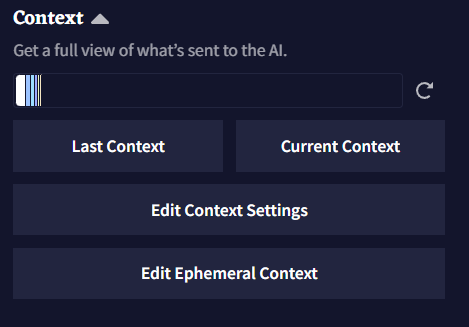해당 탭 상단의 Context Bar는 가장 최근에 사용한 Context 내의 모든 텍스트에 대한 통계를 출처1에 따라 색상으로 보여줍니다. 해당 표시줄에서 각 섹션에 마우스 포인터를 올려두면 토큰 수나 각 항목이 컨텍스트에서 몇퍼센트를 차지하고 있는지와 같은 자세한 정보가 들어있는 박스가 표시됩니다.

|

|
Goose tip: Context Bar는 얼마나 많은 정보가 사용되는지 뿐만 아니라 AI의 '두뇌'를 얼마나 사용할 수 있는지도 나타내요. 최대 컨텍스트 크기는 사용자의 구독티어에 따라 다르답니다.
Last Context 혹은 Current Context 버튼을 클릭하면 Context Viewer가 열리고 스토리 컨텍스트에 대한 모든 통계가 표시됩니다. 더 많은 정보를 얻기 위해서는 하단의 Context Viewer 섹션을 확인하십시오.
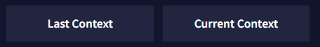
Edit Context Settings은 Context Settings 창을 엽니다. 해당 창에서 Context 크기 내에서 스토리 컨텍스트 섹션의 토큰 예산을 책정하고 위치를 조절하고 다듬을trim 수 있습니다. 전체 분석을 위해서는 Context Settings 섹션을 확인하십시오.

Ephemeral Context는 사용자의 현재 스토리 단계Story Step를 기반으로 하여 지연될 수 있거나 시간이 정해진 컨텍스트 항목을 만드는데 사용될 수 있으며, 이것은 Story Settings Tab의 View Story Stats에서 확인할 수 있습니다. 더 깊은 설명과 예제를 보기 위해서는 아래의 Ephemeral Context 섹션을 확인하십시오.
Goose tip: 설정에 따라 컨텍스트Context와 로어북Lorebook 항목이 스토리 텍스트를 상쇄해버릴 수도 있고, 그 반대도 가능해요. Context Viewer를 사용하여 스토리의 모든 항목이 어떻게 작동하여 있는지 엿볼 수 있어요.
Context Viewer
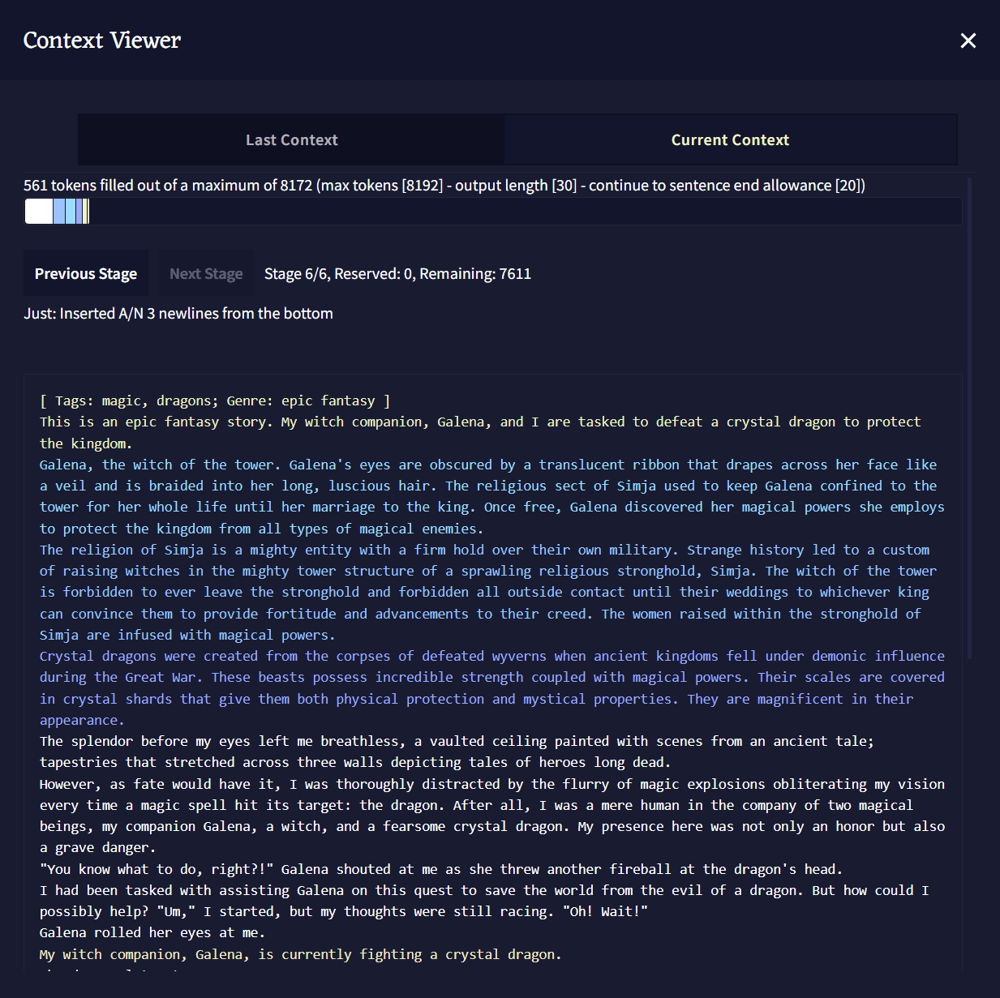
Context Viewer에서 글 생성을 위해 AI에게 전달되는 스토리의 컨텍스트Context가 어떻게 생겼는지 볼 수 있습니다. Lorebook 항목, Memory, Author's Note와 Phrase Biases가 스토리에서 어떻게 다뤄지는지에 대한 상세 정보가 제공됩니다.
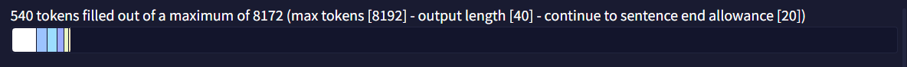
Context Viewer Bar: 상단의 Context 섹션에서 언급한 바와 유사하게, 해당 Context Viewer Bar도 스토리의 Context에 개별적인 색상과 이름이 붙여진 덩어리를 통해 시각적인 표현을 한 것입니다. 해당 표시줄의 각각의 색상에 마우스포인터를 올려두어 더 많은 정보를 볼 수도 있습니다.
Goose tip: 최대 컨텍스트 사이즈는 사용자의 구독티어와 AI Settings 페이지에서 수동으로 설정한 Max Context Size 슬라이더에 의해 결정돼요.

Stages: 활성화된 로어북 항목, 메모리, 작가노트와 스토리의 텍스트 그 자체를 통해 Story Context를 만들 때, 모든 것이 Stages에 조직화되고 삽입됩니다. 스테이지 0에서 시작하여 Context Settings에 설정된 Insertion Order 값에 따라, 스토리의 각기 다른 모든 부분들이 함께 모여 스토리의 Context를 형성합니다. Next와 Previous Stage 버튼을 눌러 각 스테이지와 Insertion Order에 따라 각 항목이 배치되는 위치를 볼 수 있습니다.
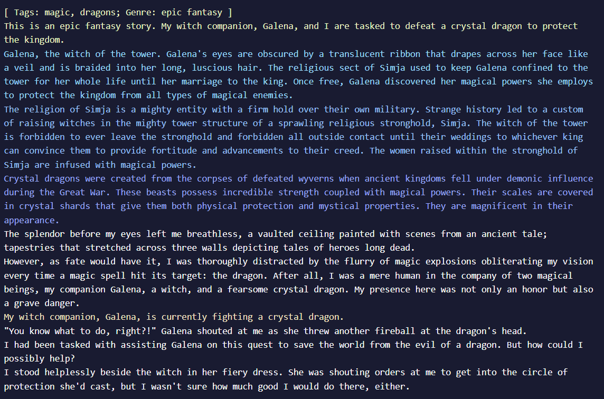
주 Context Viewer 창은 스크롤 가능한 박스 안에 전체 컨텍스트를 보여줍니다. Context Viewer Bar와 유사하게 각 출처1에 따라 다른 색상으로 표시된다.

Show non-activated entries 토글을 켜면 하단의 Context Viewer Information 박스를 확장하여 켜져는 있지만 비활성화 상태의 모든 로어북 항목을 보여줍니다.

Context Viewer Information 박스는 Story Context에 대한 또 다른 상세한 통계입니다. 해당 섹션은 로어북 항목과 Story Settings 박스에 대한 깊이 있는 정보를 보여줍니다.
- Stage: Context를 빌드할 때 항목이 삽입되는 stage를 보여줍니다.
- Order: Lorebook이나 Context Settings에 따른 항목들의 Insertion Order.
- Identifier: Lorebook이나 Context Settings 탭에서 표시되는 항목 이름.
- Inclusion: 항목이 Context에 포함되는지의 여부.
- Reason: 항목이 Context에 포함되거나 제외된 이유.
- Key: 해당하는 경우, 항목의 활성화 키.
- Reserved: Lorebook이나 Context Settings 설정에 따라 해당 항목에 예약된reserved 토큰의 수.
- Tokens: 항목의 활성 토큰의 수.
- Trim Type: Lorebook이나 Context Settings에서 정의된 설정에 따라, 다른 항목의 공간을 확보하기 위해 해당 항목이 잘리는 방법.
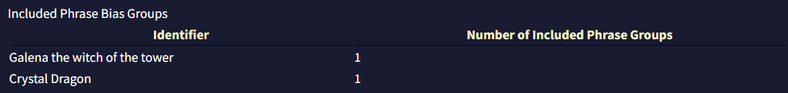
마지막으로, Included Phrase Bias Groups 섹션은
Context Settings
Context Settings 메뉴는 4개의 비슷한 섹션을 담고 있습니다: Memory Context Settings, Author's note Context Settings, Default Lorebook Settings와 Story Context Settings, 그리고 최상단의 Reset to Defaults 버튼. Lorebook 섹션에서 다루는 Default Lorebook Settings 섹션을 제외하면 각 세션은 모두 같은 구성을 하고 있습니다.
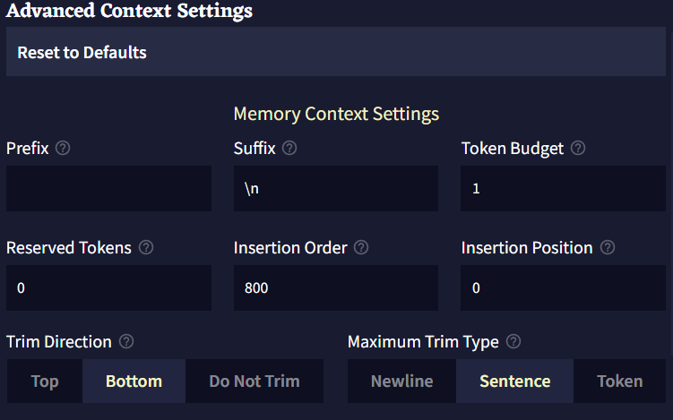
- Prefix는 트리밍trimming 후 컨텍스트에 삽입하기 전에 항목 앞에 덧붙는 텍스트입니다.
- Suffix는 트리밍trimming 후 컨텍스트에 삽입하기 전에 항목 뒤에 덧붙는 텍스트입니다.
- Token Budget은 항목이 사용할 수 있는 컨텍스트의 최대 토큰 양입니다. 0과 1(제외) 사이의 십진법 소수점은 최대 컨텍스트 사이즈(최대 토큰 - 출력의 길이)의 백분율로 해석됩니다.
- Reserved Tokens은 항목이 자체적으로 예약할 수 있는 컨텍스트의 토큰 양입니다. 모든 예약은 항목들이 컨텍스트에 놓이기 전에 이뤄집니다. 항목은 자신이 실제로 가진 양을 넘는 토큰을 예약하지 않습니다. 예를 들어, 예약된 토큰이 200이고 항목의 토큰이 100이라면 100의 토큰만 예약될 것입니다.0과 1(제외) 사이의 십진법 소수점은 최대 컨텍스트 사이즈(최대 토큰 - 출력의 길이)의 백분율로 해석됩니다.
- Insertion Order은 스토리 컨텍스트가 빌드될 때 항목들이 어떤 순서로 삽입/처리될 지를 나타냅니다. 높은 삽입 순서를 가진 항목은 토큰들을 예약하고 컨텍스트에 먼저 삽입될 것입니다. 만약 두개의 항목이 같은 삽입 순서를 같고 있다면 먼저 삽입될 것이라는 보장은 없습니다.
- Insertion Position은 항목이 컨텍스트에 삽입될 위치입니다. 0은 컨텍스트의 최상단을, 1은 한단계 아래, 2는 두단계 아래가 되는 식입니다. 음수는 컨텍스트의 가장 아래부터 계산됩니다. -1은 가장 아래, -2는 한단계 위로, -3은 두단계 위로가 되는 식입니다.
- Trim Direction은 전체 항목이 컨텍스트에 맞지 않을 때do not fit 항목을 자를 위치입니다.
Do Not Trim으로 설정한다면 항목의 전체 텍스트가 컨텍스트 내에 맞을fit 때만 항목이 포함될 것입니다. - Maximum Trim Type은 항목을 트리밍trimming할 수 있는 범위입니다.
- Insertion Type은 항목을 삽입할 때 컨텍스트를 구분하는데 사용될 단위를 결정합니다.
Ephemeral Context

위 이미지에서 볼 수 있듯이, Ephemeral Context 항목은 현재 Story Step(Story Settings Tab의 View Story Stats에서 볼 수 있음)을 기반으로 Context에 텍스트를 삽입할 수 있게 해줍니다. 상단 이미지와 아래의 박스에 나타난 Ephemeral Context 항목의 예제를 봅시다. 항목은 4개의 부분으로 나뉩니다: Delay, Duration, Insertion 그리고 엔트리의 Text.
Ephemeral Context 항목은 중괄호 {}로 감싸져야 합니다.
{+3~10,-2:Example}
-
Delay
Delay는 Ephemeral Context 항목에 들어가는 첫번째 숫자이며, 앞에+나-를 붙여 스토리의 양수 혹은 음수 스텝을 지정할 수 있습니다. 딜레이를+0으로 설정하면 항목이 즉시 활성화되며 숫자 뒤에r을 추가하면 Duration이 충족된 후 항목이 반복됩니다. Delay보다 긴 Duration을 가진 항목은 한번 활성화되면 계속 반복할 것이기 때문에, 해당 항목이 간헐적으로 트리거되게 하려면 Delay를 길게 설정하십시오. 위 예제에서 Delay는+3이므로, 이는 항목이 세 Story Steps 후에 활성화됨을 지정한 것입니다. -
Duration
항목의 Duration은 항상~기호를 앞에 붙이며, 몇개의 Story Steps 동안 항목이 활성화될지를 지정합니다. 예를 들어, Duration이~10이면, 이것은 항목이 활성화되고 나서 10개의 story step 동안 항목이 활성화될 것임을 의미합니다. -
Insertion
Insertion 값은 항상,기호를 앞에 붙이며 Duration 값 뒤에 위치합니다. 항목의 삽입 위치를 지정하기 위해 숫자 앞에+나-기호를 붙일 수 있습니다.0은 컨텍스트 상단,-1은 컨텍스트 하단입니다. 예를 들어, 해당 예제에서 텍스트는 컨텍스트 아래부터 한줄 위에 삽입됨을 의미합니다. -
Insertion 값 다음의 Text는 Ephemeral Context 항목의 텍스트이며, 앞에 반드시
:가 있어야 합니다. 의도한 것이 아니라면 항목의 텍스트 앞에 공백을 두지 마십시오.:와}사이의 모든 텍스트가 그대로 삽입됩니다.
요약하면, 이 섹션의 시작 부분에 나열된 예제는 항목이 생성된 후에 3 story step 후에, 10 story step 동안, 컨텍스트 하단으로부터 한 줄 위에 Example를 삽입할 것입니다.

Goose tip: 캐릭터가 저주받은 물건을 집었나요? 적이 랜덤한 간격으로 되돌아와 주인공을 위험에 빠뜨리나요? Ephemeral context는 더 많은 곳에서 사용할 수 있어요!
Phrase Bias
Phrase Bias를 사용하면 해당 항목이 활성화되었을 때, AI가 특정한 단어나 구를 생성할 확률을 높이거나 낮출 수 있습니다. 정확한 텍스트를 입력하려면 bias를 중괄호 {}로 둘러싸면 됩니다. 토큰 ID(토크나이저에 지정된)를 넣기 위해서는 대괄호 []로 bias를 둘러싸면 됩니다. 입력된 텍스트는 대소문자를 구분합니다.
Phrase Bias를 만들기 위해서는 텍스트 영역에 입력을 하고 저장하기 위해 엔터를 누르십시오.
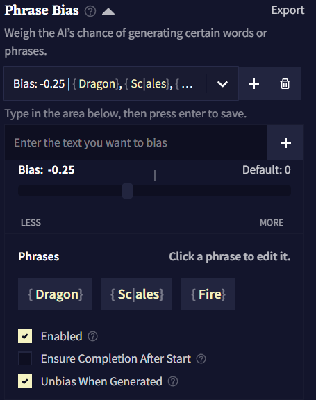
Import와 Export 버튼을 클릭하여 .bias 파일로 Phrase Bias를 가져오거나 내보낼 수 있습니다.
Bias는 그룹으로 구성되는데 각 그룹에는 고유한 bias 값이 있고 해당 값은 그룹 내부의 모든 토큰과 구에 적용됩니다. 하나의 로어북 항목에 여러 그룹의 Phrase Bias을 가질 수도 있습니다.
새 bias 그룹을 만들기 위해서는  Add 버튼을 클릭하십시오.
Add 버튼을 클릭하십시오.  Delete 버튼을 클릭하여 현재 선택된 그룹을 삭제할 수 있습니다.
Delete 버튼을 클릭하여 현재 선택된 그룹을 삭제할 수 있습니다.
Bias Value은 토큰의 그룹이 편향된 정도를 나타냅니다.
Bias Value의 효과는 사용하고 있는 AI Model에 따라 크게 다릅니다. 예를 들어, Krake는 다른 모델보다 bias에 민감하므로 소수점을 사용하는 것이 좋습니다.
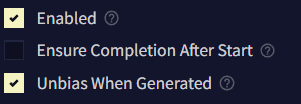
Enable은 bias를 켤지 말지를 토글할 때 사용합니다.
When Entry Inactive 그룹의 활성화 동작을 반전시킵니다. 이것을 켜면, 항목이 활성화 상태가 아니라 비활성화 상태일 때 해당 bias 그룹이 적용될 것입니다.
Ensure Completion After Start가 활성화되면, 구phrase의 첫번째 토큰이 생성될 때 후속 토큰이 항상 생성됩니다.
Unbias When Generated이 활성화되면, 구phrase가 생성된 후 나머지를 생성하는 과정에서 해당 bias가 제거됩니다. 이 옵션은 해당 구가 생성되는 것을 막지는 않고, 그곳에 놓인 bias만을 제거할 뿐입니다.
Banned Tokens

Banned Tokens에서는 AI가 생성하는 토큰이나 시퀀스를 완전히 금지시킬 수 있습니다. 정확한 텍스트를 입력하려면 bias를 중괄호 {}로 둘러싸면 됩니다. 토큰 ID(토크나이저에 지정된)를 넣기 위해서는 대괄호 []로 bias를 둘러싸면 됩니다. 입력된 텍스트는 대소문자를 구분합니다.
Goose tip: 토큰을 금지ban할 때, AI는 밴하거나 bias 설정한 것을, 다른 철자를 사용하여 우회하려고 시도할 수도 있습니다. 새로운 밴 시퀀스를 만들 때는 여러가지 중요한 것들을 잊어선 안돼요!
Ban Bracket Generation

Ban Bracket Generation 토글을 켜면 AI가 [] 대괄호를 생성하지 못하게 할 수 있습니다. 이 기능을 끄면 RPG 등에서 유용할 수 있습니다!
Stop Sequences

Stop Sequences 박스에 토큰이나 단어를 입력하여 해당 글자가 나왔을 때 글 생성을 멈추게 할 수 있습니다. 하단의 Min Output Length 슬라이더를 조절하여 Stop Sequences가 작동trigger되기 전에 얼마나 길게 글을 출력을 할 지 결정할 수 있습니다.
Duplicate and Start as Scenario

Duplicate and Start as Scenario 버튼을 누르면 로어북Lorebook 및 설정들이 포함된 현재 스토리의 복사본이 생성되고, 임포트한 새 시나리오인 것처럼 시작됩니다. 플레이스홀더를 입력하면 다음 팝업에서 활성화되므로 공유하거나 리플레이할 시나리오를 테스트할 때 유용한 버튼입니다!
역주. 해당 항목이 로어북인지, 메모리인지, 작가노트인지.
Slider Settings

Config Preset

상단의 Config Preset 드롭다운 메뉴는 사용자가 저장하거나 임포트한 모든 프리셋들이 표시되며, 그 아래에 NovelAI의 기본 프리셋들이 나열됩니다. 각 모델은 모델들이 가진 다양한 기본 프리셋이 딸려있으며 이들은 주로 창의적인 글쓰기를, 일부는 특정 글쓰기나 생성 스타일을 위해서 튜닝되었습니다. 드롭다운 메뉴 옆의 펜 아이콘은 선택한 프리셋의 이름을 변경하기 위한 것입니다.
Import 및 Export 버튼은 여러분의 프리셋을 공유하거나 다른 사람이 공유한 프리셋을 가져올 때 사용될 수 있으며 아래 세팅 중에 하나를 수정할 때마다 Update active Preset 팝업이 드롭다운 아래에 나타납니다. Update active Preset 드롭다운에서 현재 프리셋을 저장하고, Reset Changes를 통해 프리셋을 원래 설정으로 되돌리거나 새 프리셋에 현재 변경점을 저장할 수 있습니다!
Generation Options

이 페이지의 Generation Options 섹션은 세가지의 기본 생성 세팅을 포함하고 있습니다: Randomness, Output Length 그리고 Repetition Penalty. 이 세팅들은 대부분 아래의 Sampler의 어느 것도 조절할 필요 없이 그때그때 봐가면서 조절하기 명확하고 쉬운 것들 입니다.
Randomness
가장 단순하게, Randomness 값은 생성되는 다른 토큰들의 확률이 얼마나 균등한지를 결정하며, 토큰 확률 간의 차이를 늘리거나 줄이지만 결코 토큰들의 초기 순서는 재배열하지 않습니다.
값이 1보다 크다면, 낮은 확률의 토큰은 더 높은 확률의 토큰에 가까워지도록 기회chance가 증가합니다. 값이 1보다 작다면, 더 높은 확률의 토큰은 더 낮은 확률의 토큰에서 더 멀어지도록 기회chance가 증가합니다.


|
|
| Randomness 1.0 | Randomness 1.25 |
상위 토큰의 after 확률이 상당히 낮아진 것을 볼 수 있는 반면, 그 다음에 이어지는 토큰들은 그렇게 심하게 떨어지지 않을 것을 볼 수 있습니다. 해당 수치를 높임으로써 상위 토큰들이 전보다 낮은 확률을 갖게 됨에도 불구하고, 낮은 확률의 토큰에게 더 커진 생성 기회를 주게 됩니다.
Output Length
Output Length는 AI가 출력당 생성할 수 있는 텍스트 문자의 최대량을 조절합니다. 최소 4자에서 최대 600자까지입니다. AI 생성의 특성 때문에 긴 출력길이는 품질이 달라질 수 있으니 주의해야 하며, 짧은 출력 길이가 주제를 더 잘 유지하는 경향이 있습니다.
Repetition Penalty
Repetition Penalty 슬라이더는 context에서 토큰이 나타날 확률에 패널티를 적용하며, 여러번 나타나는 것에는 더 심한 패널티를 부과합니다. 해당 값이 높다면 더욱 심한 패널티를 적용하므로 이 슬라이더를 너무 높이면 출력이 저하되거나 다른 의도치않은 동작을 발생할 수 있습니다. 반면에 너무 낮은 세팅 값에서는 AI가 계속 같은 단어나 구두점을 반복할 수 있습니다. 해당 세팅을 살짝 조절하여 스토리의 페이스나 포커스에 대해 안내하는데 도움이 될 수도 있습니다. 예를 들어, 만약 AI가 특정 캐릭터의 이름이나 세부 사항을 더욱 자주 언급하게 하고 싶다면 해당 슬라이더를 낮추고, 더 다양한 단어 선택을 사용하게 하고 싶다면 이 슬라이더를 높이십시오.
Sampling
아래의 샘플링 옵션은 생성될 때 토큰이 어떻게 재분배되는지, 어떻게 트리밍trimming되는지를 변경합니다.
CFG Scale
Advanced: CFG Scale를 참조하십시오.
Mirostat
Mirostat에는 Tau와 Learning Rate라는 두개의 슬라이더가 있습니다. 이 샘플러는 Tau 값으로 지정된 주어진 복잡도로 텍스트를 유지하려고 시도하며, 세팅이 높을수록 더욱 복잡한 텍스트를 제공하려고 시도합니다. Learning Rate 슬라이더는 샘플러가 컨텍스트에 얼마나 빠르게 적응할지를 지정합니다. 1로 설정하면 즉각적이고, 낮은 세팅일수록 완화됩니다. 이 샘플러와 Settings Order의 다른 샘플러와 함께 사용하는 것은 권장되지 않습니다.
Nucleus
Nucleus 샘플링은 Top-P라고도 하며, 가장 높은 확률의 토큰을 선택하고 각각의 후속 토큰들의 확률의 합이 설정한 Nucleus 값에 도달할 때까지 후속 토큰들의 확률을 더합니다. 나머지 토큰들은 모두 잘려서 출력의 일관성은 높아지지만, 이 과정에서 많은 낮은 확률의 토큰들이 사라지게되어 창의성이 희생됩니다. 해당 슬라이더를 낮게 설정할 경우 더 많은 토큰이 사라지므로, 해당 값을 실험할 때는 조금만 조정하는 것을 추천합니다.
Tail Free
Top K와 Nucleus 샘플링을 대체하기 위해 고안된 Tail Free은 출력의 확률의 '꼬리'를 계산하기 위해 수학 공식을 사용합니다. 꼬리, 그리고 Tail Free 샘플러에 대한 자세한 설명은 이 블로그 게시글에서 자세히 설명되어 있습니다. 이 샘플러는 가장 낮은 확률의 임계점을 출력 확률 분포의 '꼬리'로 결정한 다음 이를 제거합니다. 이렇게 제거된 후에 살아남은 토큰들은 보상을 위해 확률을 재조정합니다.
간단하게 말해, 이 세팅은 출력의 Logical Probabilities 하단에서 수식formula이 최악의 가능성의 토큰으로 간주한 것의 일부를 잘라내는데 도움을 줍니다. 이 슬라이더를 조절할 때는 조금만 조정하는 것을 추천합니다. Tail-Free를 0에 가깝게 설정할수록 최악의 토큰으로 간주되는 임계점이 더 커지고 강해지기 때문입니다.
Top A
Top-A 샘플링에서 설정한 값은, 허용되는 가장 낮은 토큰 확률을 자르는 기준점을 정의합니다. Top A 값이 높을수록 더 엄격해져 더 많은 토큰을 잘라내는 반면, Top A를 낮게 설정하면 더 적은 토큰을 잘라냅니다. 이 제한은 가장 높은 확률 토큰을 기준으로 조정됩니다. 예를 들어 한 토큰의 집합에서 상위 토큰이 낮은 확률을 갖는다면, Top-A 값이 같을지라도 상위 토큰이 더 높은 확률을 가진 집합의 경우보다 잘라내는 토큰의 제한은 더 낮게 조정됩니다.
Top K
Top K는 사용과 조정이 가장 간단한 샘플러입니다. Top K가 적용되면, 생성되는 토큰의 풀이 슬라이더 설정에 맞게 제한됩니다. 예를 들어, Top K가 10으로 설정되어 있다면, 이 샘플러는 최상위 10개의 토큰을 제외한 모든 토큰을 제거합니다. 이 샘플러의 단점은 풀에 있는 토큰의 수가 처음에 설정한 Top K 세팅보다 적으면 이 샘플러는 아무런 효과가 없다는 것입니다.
Goose tip: Top K을 1로 설정하면 생성을 다시 시도할 때마다 같은 토큰을 얻게 되요!
Top G
Top G는 Top K와 비슷하게 기능하지만, 가능한 토큰의 최대 수를 제한하는 대신 토큰 그룹의 최대 수를 제한하는 설정을 합니다. 여기서 그룹이란 같은 확률 값을 공유하는 토큰의 집합을 말합니다. 이 기능은 Kayra 모델에서만 지원합니다.
Typical
Typical 샘플링은 약간 더 복잡한 옵션 중에 하나입니다. 각각 생성된 출력 토큰에 대해 conditional entropy라는 것을 계산하는데, 이는 예상되는 다음 토큰의 information content의 척도입니다. 계산된 값이 Typical 세팅과 같거나 더 높을 경우, 혹은 Typical 세팅의 음수 값보다 낮으면 토큰이 잘립니다.
Change Settings Order
Order Settings 창을 통해 샘플러의 순서를 바꿀 수 있습니다. 샘플러는 위에서부터 아래로 적용됩니다. 화살표 버튼을 사용하거나 개별 박스를 드래그하여 샘플러 순서를 바꾸고 오른쪽의 버튼을 눌러 토글하십시오. Temperature(Randomness)는 비활성화할 수 없습니다.
샘플러는 적용하는 순서는 예상할 수 없는 효과를 일으킬 수 있으므로 기본 구성 프리셋으로 시작하여 실험을 해보십시오.
Repetition Penalty

Repetition 섹션과 아래의 Alternative Repetition Penalty 옵션들은 모두 글 생성을 덜 반복적으로 만들기 위한 것입니다.
- Phrase Repetition Penalty
더 자세한 설명을 위해 Advanced: Phrase Repetition Penalty을 참조하십시오.
- Use Default Whitelist
화이트리스트 토큰의 전체 리스트를 보려면 Repetition Penalty Whitelist를 참조하십시오.
- Range
Repetition Penalty Range는 Story Context의 아래부터 시작해서 몇 개의 토큰에 Repetition Penalty 설정이 적용될 것인지를 나타냅니다. 이 값을 최소치인 0(off)로 설정하면, 반복 패널티는 출력 전체에 걸쳐 적용되며, 이는 슬라이더를 Subscription Tier의 최대로 설정한 것과 같습니다. 이 슬라이더는 Dynamic Range가 비활성화된 경우에만 작동합니다.
- Slope
Slope 슬라이더는 컨텍스트의 가장 최근 토큰과의 거리에 따라, 설정한 Repetition Penalties(Phrase Repetition Penalty는 제외)의 몇퍼센트를 컨텍스트의 토큰에 적용할 지를 지정합니다. 비활성화되면 기울기가 적용되지 않으며 모든 패널티가 평범하게 적용됩니다.
Slope가 1과 같거나 1보다 작은 값으로 설정된다면, 마지막 토큰만 100%의 패널티 값을 받고, 이전 토큰들은 줄어든 패널티 퍼센트를 겪게 됩니다. 이 감소는 Slope를 0에 가깝게 설정할 수록 완만하고 점진적이 됩니다. 값을 정확하게 1로 설정하면, 각 토큰에 대한 퍼센트 감소는 동일한 양이 되고 기울기가 곧은 상향선이 됩니다.
만약 값이 1보다 크다면, Slope는 직선에서 계단 모양으로 바뀌고, Slope 값이 최대값인 10에 가까워질수록 더 강렬intense해집니다. 이 범위에서, 가장 최근의 여러 토큰이 100%의 패널티 값을 받을 수 있지만, 이전 토큰은 갑자기 패널티 비율이 크게 감소하는 "절벽"이 형성됩니다. Slope가 10이면, 컨텍스트의 절반은 100%의 패널티 값을 받는 반면, 나머지 절반은 패널티를 전혀 받지 않습니다.
- Dynamic Range
해당 값이 활성화되면 Dynamic Range 토글은 Repetition Penalty 설정을 Story 텍스트에만 적용되도록 만듭니다. 즉, Memory, Author's Note, Lorebook 텍스트 내에는 적용되지 않음을 의미합니다. 이것을 활성화하면 AI는 해당 세션에서 언급된 설명 등을 더 자주 언급할 수 있으며 Range 슬라이더가 조절되는 것을 방지할 수 있습니다.
Alternative Repetition Penalty
Alternative Repetition Penalty 섹션의 이 설정은 매우 고급 기능입니다. 아주 약간 슬라이더를 조절해도 AI에 커다란 영향을 줄 수 있으며, 너무 많은 토큰을 잘라내어 자주 헛소리하는 결과가 나올 것입니다. 이 값을 실험할 때는 매우 작은 조정만을 사용하고, 범위 설정을 조심하십시오.
-
Presence
Presence 패널티는 기본 Repetition Penalty와 비슷하게 동작하지만, 토큰이 얼마나 자주 나타나는지 조정하는 대신 토큰이 나타날 때마다 일정한flat 패널티를 적용합니다. Presence 패널티를 실험할 때는 매우 작은 조정만을 하는 걸 추천하는데, 이 값을 너무 높게 설정할 경우 구두점 토큰이 빠르게 패널티를 받아 생성되지 않을 수 있습니다.
-
Frequency
Frequency 패널티는 얼마나 자주 토큰이 나타나는지에 따라 적용되며, 더 일반적인 토큰에는 패널티를 부과하고 덜 일반적인 토큰에는 덜 부과합니다. 만약 이 값이 너무 높다면, Frequency는 빠르게 출력의 품질을 저하시킬 수 있으므로, 이것을 실험할 때는 매우 작은 조정만을 해야 합니다.
Lorebook
 Lorebook은 스토리의 인물, 장소, 사물, 세력 및 기타 다른 내러티브적 요소에 살을 붙일 수 있는 완벽한 장소입니다. 스토리에 각 항목들이 나타날 때마다 AI의 컨텍스트에 추가되는 보충 정보를 위한 저장소라고 생각해도 됩니다. 내부에는 새로운 로어lore 항목을 생성할 수 있는 툴도 있습니다.
Lorebook은 스토리의 인물, 장소, 사물, 세력 및 기타 다른 내러티브적 요소에 살을 붙일 수 있는 완벽한 장소입니다. 스토리에 각 항목들이 나타날 때마다 AI의 컨텍스트에 추가되는 보충 정보를 위한 저장소라고 생각해도 됩니다. 내부에는 새로운 로어lore 항목을 생성할 수 있는 툴도 있습니다.
좌측 상단의 버튼으로 로어북을  Import하고
Import하고  Export 할 수 있습니다.
Export 할 수 있습니다.  Image embed 버튼으로
Image embed 버튼으로 .png 이미지 파일 내부의 로어북을 삽입embed할 수도 있습니다. 다른 사람과 로어북을 공유하기 매우 좋은 방법입니다!
아래의 이미지는 삽입된embedded 로어북 항목의 예시입니다. 이 이미지를 다운로드해보고 이것이 어떻게 작동하는지 확인해보십시오!

Goose tip: NovelAI Discord에는 NovelAI 커뮤니티가 만든 여러 로어북과 기타 창작물로 가득한 컨텐츠 공유 채널이 있어요!
 Selection 아이콘은 삭제할 여러개의 항목을 선택하거나 내보낼 항목을 선택하는데 사용됩니다.
Selection 아이콘은 삭제할 여러개의 항목을 선택하거나 내보낼 항목을 선택하는데 사용됩니다.
 Sort 아이콘은 항목을 알파벳순이나 최신순으로 정렬할 때 사용됩니다.
Sort 아이콘은 항목을 알파벳순이나 최신순으로 정렬할 때 사용됩니다.
 Search 아이콘은 검색을 할 때 사용됩니다.
Search 아이콘은 검색을 할 때 사용됩니다.
Entries
Entries는 로어북의 메인입니다. 각 항목은 자신만의 고유한 활성화 키를 갖고 있고, 최근의 컨텍스트에서 해당 키가 발견되면, 해당 항목의 텍스트가 컨텍스트에 삽입되게 됩니다.
 Delete 버튼은 선택된 엔트리를 삭제하고,
Delete 버튼은 선택된 엔트리를 삭제하고,  Duplicate 버튼은 선택된 엔트리를 복사합니다.
Duplicate 버튼은 선택된 엔트리를 복사합니다.
Entry title은 정리 목적으로만 사용되며 AI에게는 보이지 않습니다. 그렇기 때문에 사용자는 항목 텍스트 내부 어딘가에 항목의 제목entry title을 넣어야 합니다. 그렇지 않으면 AI는 이 항목이 어떤 것에 관한 것인지 알지 못할 것입니다.
항목 우측의 Enabled 토글은 해당 항목이 활성화되어 있는지를 결정합니다.  Disabled 항목은 키가 트리거되어도 컨텍스트에 삽입되지 않을 것입니다.
Disabled 항목은 키가 트리거되어도 컨텍스트에 삽입되지 않을 것입니다.
Entry Text는 해당 항목이 활성화되었을 때 컨텍스트에 들어갈 텍스트입니다.
Activation Keys는 최근 이야기에서 발견되었을 때 로어북을 활성화시키는 단어나 문구입니다. 키는 대소문자를 구분하지 않습니다.
/로 시작되고 끝나는 키는 정규표현식으로 평가됩니다. 이 정규표현식은 대소문자를 구분하고 다음과 같은 플래그를 지원합니다: i, s, m, u. 만약 키가 플레이스홀더의 일부라면, 첫번째 / 앞, 즉 가장 앞에 $를 추가하세요.
Goose tip: 정규표현식은 러닝 커브가 가파른 어려운 주제입니다. 정규표현식에 대해 더 공부하고 싶다면 RegExr를 확인해보세요.
Always On이 켜져있다면, 해당 항목은 최근 스토리에서 키가 발견되는 것과는 상관없이 항상 컨텍스트에 삽입됩니다.
 Hide 버튼은 해당 항목을 숨김처리하여 별도로 공개표시를 하지 않는한 항목의 내용을 볼 수 없게 만듭니다. 해당 기능은 다른 사람과 공유할 목적의 시나리오를 만들 떄 유용하며, 플레이어에게 세부 정보를 숨길 수 있도록 해줍니다.
Hide 버튼은 해당 항목을 숨김처리하여 별도로 공개표시를 하지 않는한 항목의 내용을 볼 수 없게 만듭니다. 해당 기능은 다른 사람과 공유할 목적의 시나리오를 만들 떄 유용하며, 플레이어에게 세부 정보를 숨길 수 있도록 해줍니다.

숨겨진 항목은 컨텍스트 뷰어에서도 가려집니다.

Generator
로어북을 작성하고 싶지만 어디서부터 시작해야 할지 감이 안 오십니까? 그렇다면 AI가 그 빈칸을 채울 수 있도록 해보십시오!
Lore Generator는 사용자가 생각할 수 있는 모든 캐릭터, 사물, 장소나 개념에 대한 로어북을 만들수 있게 해주는 강력한 도구입니다. 일단 리스트에서 항목의 타입을 선택하고 생성하고 싶은 내용을 입력한 후에 생성generator을 누르십시오. 에디터에서와 마찬가지로 이미 작성된 로어북 항목에, AI에게 텍스트를 추가로 입력하라고 시킬 수도 있습니다.

Generation Type은 제네레이터가 특정한 항목의 타입을 생성하는데 영향을 줍니다. 클릭하여 드롭다운을 열고 타이핑을 하고, 엔터를 침으로써 사용자 정의 타입을 설정할 수 있습니다.
Input Text는 제네레이터가 사용하는 프롬프트입니다. "Fogwood Keep" 같은 이름이나 "an enthusiastic merchant"과 같은 짧은 설명이 가장 잘 작동합니다. 항목을 더 자세히 설명하기 위해 소괄호로 태그를 추가할 수도 있습니다. 에시: "Black Skull Fleet (pirates, space)"
**Add Context (advanced)**를 사용하여 메모리나 작가노트, 최근의 스토리(~2500자) 혹은 다른 로어북 항목을 컨텍스트에 포함시켜 항목을 생성할 때 해당 정보를 사용할 수 있도록 할 수 있습니다.
Generation History는 로어북 제네레이터의 최근 출력 50개를 보여줍니다. 페이지를 새로고침하면 삭제됩니다.
Change settings를 클릭하여 로어북 제네레이터에 사용된 모델과 세팅 프리셋을 바꿀 수 있습니다.
Placement
Placement 탭에서는 스토리 컨텍스트에 로어북 항목이 삽입되는 위치와 방법을 바꿀 수 있습니다.
Note: Placement 탭은 숙련된 사용자를 위한 탭입니다. 해당 기능의 사용 방법과 효과를 이해하고 있는 경우에만 placement 값을 바꾸십시오.
Search Range는 키를 검색할 스토리의 글자의 수 입니다. 최대값은 10000입니다.
Key-Relative Insertion은 컨텍스트 내에서 검색되는 로어북의 마지막 키에 대해 상대적으로 로어북 항목을 삽입하게 합니다.1
양수 Insertion Position은 키 뒤에 항목을 삽입합니다.
음수 Insertion Position은 키 앞에 항목을 삽입합니다.
해당 설정이 켜진 항목은 일반적으로 스토리 컨텍스트(기본적으로 0)보다 낮은 Insertion Order를 갖고 충분한 양의 예약된 토큰을 가져야 합니다. 대량의 상대적으로 삽입된 로어북 항목은 컨텍스트 생성을 느리게 할 수도 있습니다.
Cascading activation이 켜지면 해당 로어북 항목은 비(非)스토리 컨텍스트 항목에서 키를 검색할 것입니다. 비(非)스토리 컨텍스트 항목에서는 검색 범위가 고려되지 않으며, 활성화를 일으킨 항목의 텍스트가 컨텍스트 내에 있을 것이라는 것이 보장되지 않습니다.2
Prefix는 로어북의 내용이 트리밍된 후 컨텍스트에 삽입하기 전에 항목 앞에 추가되는 텍스트입니다.3
Suffix는 로어북의 내용이 트리밍 후 컨텐스트에 삽입하기 전에 항목 끝에 추가되는 텍스트입니다.3
Token Budget은 로어북 항목이 사용할 수 있는 컨텍스트의 최대토큰의 양입니다.
0과 1(1은 제외)사이의 십진수 소수점을 입력하면 최대 컨텍스트 사이즈(최대 토큰 - 출려 길이)의 백분율로 해석될 것입니다.
Reserved Tokens은 항목이 자체적으로 예약할 수 있는 컨텍스트 토큰의 양입니다. 모든 예약은 항목이 컨텍스트에 배치되기 전에 이루어집니다. 실제 해당 항목이 포함하는 토큰의 양보다 더 많은 토큰을 예약하지는 않습니다. 예를 들어, 예약된 토큰이 200으로 설정되고 로어북 항목이 100 토큰이라면, 100개의 토큰만 예약됩니다.
0과 1(1은 제외)사이의 십진수 소수점을 입력하면 최대 컨텍스트 사이즈(최대 토큰 - 출려 길이)의 백분율로 해석될 것입니다.
로어북의 항목은 컨텍스트가 빌드되기 전에, 설정된 Insertion Order에 따라 처리됩니다. 높은 Insertion Order를 가진 항목은 토큰을 예약하고 컨텍스트에 먼저 처리, 삽입됩니다. 두 항목의 Insertion Order가 같다면, 먼저 삽입될 것이라는 보장은 없습니다.4
Insertion Position은 항목이 컨텍스트에 삽입될 위치입니다. 0은 컨텍스트의 최상단, 1은 한단계 아래, 2는 두단계 아래가 되는 식입니다. 음수는 컨텍스트 컨텍스트 최하단부터 계산합니다.. -1은 최하단, -2는 그보다 한단계 위, 그리고 -3은 두단계 위가 되는 식입니다.5
Trim Direction는 전체 항목이 컨텍스트에 맞지 않을 경우do not fit 항목이 잘릴 위치를 설정합니다. 'Do not Trim'으로 설정하면 항목의 텍스트가 컨텍스트가 맞을 때만 항목이 포함됩니다.
Maximum Trim Type은 항목이 잘릴 수 있는 범위입니다.
Insertion Type은 항목을 삽입할 때 컨텍스트를 구분하는 데 사용되는 단위를 결정합니다.
역자주: 로어북의 내용이 설정한 위치가 아니라 마지막으로 검색되는 키의 바로 뒤나 앞에 붙게 하는 기능이다.
역자주: 스토리의 내용뿐만 아니라 메모리나 작가노트까지 로어북 키를 검색한다.
역자주: 만약 로어북 내용이 abcd이고 prefix가 english면, 최종적으로 englishabcd가 컨텍스트에 삽입된다. suffix라면 abcdenglish가 삽입된다.
역자주: 처리하는 순서를 말한다. 값이 높다면 해당 값을 먼저 컨텍스트에 넣는다. 즉, 해당 값이 낮은 로어북은 처리 우선순위가 낮으므로 공간 절약을 위해 삭제될 수도 있다.
역자주: Insertion Order 대로 값을 처리한 후 항목이 삽입되는 위치이다. 예를 들어, 기본값 기준으로 메모리는 Position 0 Order 800, 스토리는 Position -1 Order 0, 로어북은 Position -1 Order 400, 작가노트는 Position -4 Order-400으로 설정되어 있다. 그러므로 일단 메모리를 가장 먼저 컨텍스트에 넣고 위치를 가장 위로 놓는다(메모리). 그리고 로어북을 컨텍스트에 넣고 위치를 하단에 넣는다(메모리-로어북). 그리고 스토리를 컨텍스트에 넣고 위치를 하단에 놓는다(메모리-로어북-스토리). 그리고 Insertion Order가 -400인 작가노트를 컨텍스트에 넣고 -4(가장 아래에서 4번째줄) 위치에 놓게 되는 것이다. 즉, Insertion Order 순서대로 컨텍스트에 넣고 Insertion Position 값에 맞게 위치를 조절하는 것이다. 해당 부분은 Context Viewer의 Stages 란에서 Previous Stage와 Next Stage를 클릭하며 확인할 수 있다.
Phrase Bias
Phrase Bias를 사용하면 항목이 활성화되어 있을 때, AI가 특정 단어나 구문을 생성할 확률을 높이거나 낮출 수 있습니다. 정확한 텍스트를 입력하기 위해서는 bias를 {중괄호}로 감싸고, 토큰 ID(토크나이저에 지정된)를 입력하기 위해서는 [대괄호]로 감싸십시오. bias는 대소문자를 구분합니다.

Import와 Export 버튼을 클릭하여 phrase Bias를 .bias 파일로 가져오고 내보낼 수 있습니다.
Bias는 group으로 구성되어 있고, 각 그룹은 Bias 값을 갖고 있습니다. 이 bias 값은
Categories
Categories는 로어북 항목을 그룹으로 정리하는데 사용됩니다.
Default 탭에서는 해당 카테고리 내에서 만든 새 항목의 기본 배치 설정을 바꾸거나 기존의 모든 항목을 업데이트할 수 있습니다.
Subcontext탭에는 Create Subcontext 토글이 있습니다. 이 토글을 활성화하면 해당 카테고리 내의 로어북 항목들이 그룹화되고, 이 그룹화된 항목들은 선택된 설정을 이용하여 컨텍스트에 삽입됩니다.
Phrase Bias 탭은 개별 엔트리 항목의 phrase bias 탭과 동일한 기능이지만, 카테고리 레벨에서 설정된 bias는 해당 카테고리 내의 모든 항목이 활성화가 될 때 활성화된다는 점이 다릅니다.
Text Adventure
Text Adventure 모드의 컨셉은 명확합니다. > (caret) 기호를 사용하여 당신이 원하는 것이나 캐릭터가 동작을 수행할 것을 가리킬 수 있습니다. 그 후 AI는 그 행동을 분석하고 알맞는 내러티브를 응답으로 만들어냅니다. 이 > 행동은 그것 자체만으로는 이야기의 일부를 형성하지는 않지만 AI에게 내러티브의 방향을 안내하는 단서와 같은 역할을 합니다.
스토리 패널에서는 > 기호가 숨겨져 있다는 사실을 기억하세요. Context를 확인할 때만 보입니다.

Getting Started
Text Adventure 모드를 시작하기 위해서는 Text Adventure 프롬프트가 준비되어 있어야 합니다. 새 이야기를 만들 때, 이미 만들어진 이야기를 선택할 수도 있고, 스스로 이야기를 만들어내도 됩니다.
하지만 NovelAI는 완전하게 빈 프롬프트로 Text Adventure를 시작할 수 있지만, AI는 작업할 수 있는 더 많은 재료가 주어졌을 때 더욱 일관성있게 글을 쓸 것입니다.

이미 만들어진 프롬프트를 선택하거나 빈 프롬프트로 시작하기 위해, 화면 왼쪽 모서리에 있는 New Story 버튼을 클릭하십시오.
Starting With a Blank Prompt
새 이야기를 만든 후, Text Adventure 버튼을 클릭하십시오. 이걸로 끝입니다! 다시 말하지만, 완전하게 빈 프롬프트로 이야기를 시작하는 것은 더 길고 적절하게 작성된 프롬프트에서 시작하는 이야기만큼 일관성이 없을 수 있습니다.
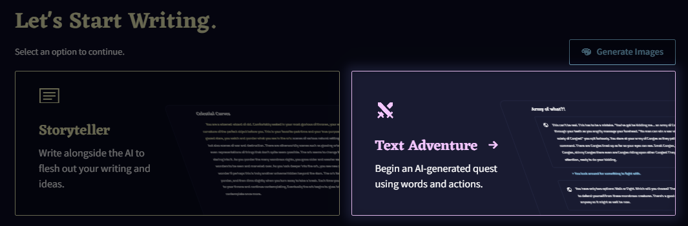
Selecting A Pre-made Prompt
화면 우측 하단의 View All Scenarios를 클릭하여 시나리오 뷰어를 확대하십시오. 그리고 Text Adventure 태그가 있는 프롬프트를 찾고 클릭하십시오. 검색바에서 text를 입력하면 쉽게 찾을 수 있습니다. 프롬프트를 고른 후에는 Start를 클릭하거나 모든 필요한 플레이스 홀더를 채우십시오.

Goose tip: 이미 만들어진 프롬프트의 일부에는 미리 플레이스 홀더가 채워져 있습니다.
The Text Adventure Module
Text Adventure 스타일로 글을 작성하는 AI를 돕기위해 특별히 만들어진 AI 모듈이 있습니다. Text Adventure 모드로 이야기를 시작하지 않아을 때, 이 모듈을 선택하면 Text Adventure UI가 활성화됩니다.
이 모듈을 선택하기 위해서 해야할 것은 모듈 선택 드롭다운을 클릭하고 화면 왼쪽(옵션 사이드바) Text Adventure 클릭하는 것 뿐입니다.

The Two Input Modes
Text Adventure 모드는 보통의 Storyteller Editor와는 다른 입력 방식을 갖습니다.
Text Adventure 모드에서는 명령어 형식의 입력을 받는데, 적절할 때 자동으로 Text Adventure 스타일에 맞는 서식이나 대문자, 구두점의 수정이 발생합니다.
actions와 dialogue라는 두가지 자동 서식 모드가 있습니다.
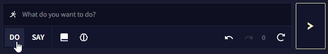
Do: 이 입력 모드에서는 사용자의 입력 앞에 > You를 추가합니다. 이것은 당신의 캐릭터가 하려는 행동을 서술하기 때문에 텍스트 어드벤쳐의 빵과 버터입니다.
Example: charge the dragon

Say: 이 입력 모드는 문장 부호에 따라 사용자의 입력을 수정합니다.
온점이나 다른 구두점이 없는 경우, 사용자 입력에 > You say가 앞에 덧붙여집니다.
Example: you've had enough

물음표로 입력이 끝난다면, 사용자 입력에 > You ask가 앞에 덧붙여집니다.
Example: you've had enough?

느낌표로 입력이 끝난다면, 사용자 입력에 > You yell이 앞에 덧붙여집니다.
Example: you've had enough!
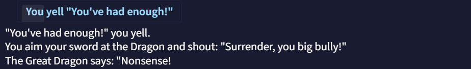
Goose tip: 입력 박스를 사용하는 것외에도 편집기에서 텍스트를 직접 클릭하고 변경하여 자유롭게 이야기의 모든 부분을 자유롭게 편집할 수 있어요.
여러분의 행동을, 여러분의 캐릭터가 하는 행동이 아닌 다른 걸로 바꾸는 것도 포함됩니다.
Advanced Inputs
Special Actions
do 모드에서 입력 중 일부는 특별한 기능을 갖고 있습니다.
- 단순히
l을 누르면You look around.가 됩니다. - 단순히
i를 누르면You check your inventory.가 됩니다. - 단순히
x something을 누르면 그것을설명합니다: 예를 들어,x book은You examine the book이 됩니다. - 단순히
n,w,s,e,nw,ne,sw,se,u,d를 입력하면 캐릭터가 해당 방향으로 이동할 것입니다: 예를 들어,n은you go north가 되고,sw는you go southwest가,u는you go up, 그리고d는you go down이 됩니다. - 단순히
z를 입력하면You wait.가 됩니다.
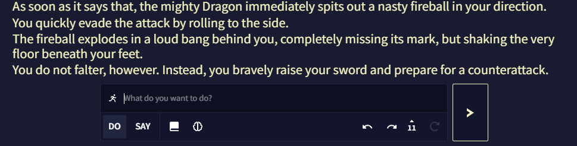
Wildcards
와일드카드는 위의 것들과 비슷힌 특별한 입력이지만 약간 다르게 작동합니다.
Wildcards는 입력의 일부를 AI에게 맡깁니다.
와일드카드는 각각 약간 다른 방식이긴 하지만, do와 say 모드에서도 작동합니다.
*이나,로 입력을 마치면 AI는 그 행동의 후속 결과와 함께 여러분의 행동을 계속할 것입니다. 이 경우,*는 삭제되지만,는 유지됩니다.
예를 들어, grab the dragon's tail*를 입력하면 최종 행동은 You grab the dragon's tail and spin it around.가 될 수 있습니다.
- do 모드에서
!만 입력한다면 랜덤 행동을 하고, say 모드에서는 어떤 것을 외칩니다. - do 모드에서
?만 입력한다면 어떤 것에 대한 궁금증을 표현하고, say 모드에서는 어떤 것에 대해 물어봅니다.

Shortcuts
바로가기는 Input Mode에서 일반적으로 할 수 없는 것을 쉽게 할 수 있게 해줍니다.
"로 시작하면 여러분은 뭔가를말하게됩니다. 심지어 do 모드에서도 말입니다.>로 시작하면 여러분은 뭔가를하게됩니다. 심지어 say 모드에서도 말입니다.!로 시작하는 것은 약간 더 특별합니다. 이것은 input mode에서 적용받는 어떠한 수정 없이, 여러분이 입력한 대로 그대로 정확하게 전달이 됩니다. 입력 시작 부분에 숨겨진>를 제외하고는 말입니다. 그 결과, 주인공이 지시받지 않은 행동이나 명령이 발생합니다. 구버전의 NovelAI에서는 story mode 입력으로 구분되었습니다.
Example: !The dragon suddenly has a heart attack.

Goose tip:
!바로가기를 사용할 때는 적절한 대소문자와 구두점을 사용했는지 확인하세요. AI가 Text Adventure 입력에 일반적으로 수행하는 어떠한 교정도 수행하지 않으니까요.
What exactly does > do in the context?
기본적으로 AI는 > 동작을 캐릭터의 행동이 아닌 플레이어의 행동으로 인식합니다. 내러티브에서 실제로 일어나고 있는 일이 아닌, 캐릭터가 하려는 행동만 설명할 뿐입니다. 그렇기 때문에 AI는 어떤 식으로든 그 행동을 해석해야 하는 이유이자, 때떄로 행동을 단순히 단어로 설명하지 않는 이유입니다.
Goose tip: 만일 AI가
>동작을 더 정확하게 따르게 하고 싶다면 더 자세하게 적어보세요. AI에게 해석의 여지를 더 주고 싶다면 세부적인 사항을 적지마세요.
User Settings
Library Sidebar의 상단 아이콘으로 표시되는 User Settings Menu는 NovelAI의 모든 개인화 및 접근성 옵션이 있습니다—그리고 그 이상도요!
User Settings Menu의 다양한 탭들을 사용하여 NovelAI의 외관을 물론, 어떻게 텍스트와 AI 결과물이 보여지는지에 관한 여러 측면을 조절하고 개인화할 수 있습니다. Text To Speech 기능도 기본 AI 모델 설정과 에디터 기능 및 바로가기를 위한 Hotkeys의 리스트와 함께 해당 란에 있습니다. 대부분의 옵션은 한눈에 알 수 있거나 그것에 대한 설명이 같이 있으므로 해당 페이지에서는 이 메뉴의 더 고급적이고 중요한 부분을 다룰 것입니다.
- AI Settings
- AI Settings 탭에서는 AI 출력 표시와 생성에 관한 설정을 찾을 수 있습니다. 예를 들어: 출력 스트리밍과 문장 다듬기, HypeBot, 토큰 제한과 기본 bias 설정과 출력에서 Token Probabilities 보는 옵션.
이 탭에서는 Inline Generation 모델에 대한 체크박스도 포함되어 있어, 특수 양뱡향 모델과 선호하는 기본값 사이를 토글할 수 있습니다.
- AI Settings 탭에서는 AI 출력 표시와 생성에 관한 설정을 찾을 수 있습니다. 예를 들어: 출력 스트리밍과 문장 다듬기, HypeBot, 토큰 제한과 기본 bias 설정과 출력에서 Token Probabilities 보는 옵션.
- Interface
- Interface 탭에서는 NovelAI의 많은 텍스트 서식과 UI 세팅이 포함되어 있습니다. 언어를 바꾸고, 버튼과 텍스트의 크기를 조절하고, 텍스트의 간격을 조절하고, UI 기능을 켜거나 끌 수 있으며 Editor V2의 실험적 기능을 켤 수 있습니다!
터치스크린 기기에서의 사이드바 스와이프 활성화 설정, 오른쪽 버튼의 NovelAI의 컨텍스트 메뉴와 미니바 토글 설정도 여기에서 찾을 수 있습니다.
- Interface 탭에서는 NovelAI의 많은 텍스트 서식과 UI 세팅이 포함되어 있습니다. 언어를 바꾸고, 버튼과 텍스트의 크기를 조절하고, 텍스트의 간격을 조절하고, UI 기능을 켜거나 끌 수 있으며 Editor V2의 실험적 기능을 켤 수 있습니다!
AI Settings
AI Settings 탭에는 여러 가지의 중요한 옵션과 외관을 담당하는 옵션이 있습니다: 텍스트 스트리밍, 문장 다듬기, 이야기에 재미있는 의견을 하게 설계된 해설 동반자인 HypeBot! 토큰 확률 표시와 강조, 문맥 길이 등의 실험적인 기능은 Experimental 섹션에서 사용할 수 있습니다.

AI Responses

AI response 섹션에서는 토큰 스트리밍과 문장 다듬기 옵션이 있습니다. 이 설정들은 가독성 향상을 위해 기본적으로 활성화되어 있습니다.
Stream AI Responses
Stream AI Responses을 켜면 한번에 글이 나타나는 것이 아니라, 글이 생성될 때마다 토큰 단위로 화면에 나타납니다. 아래의 Streamed Response Delay 슬라이더는 얼마나 빨리 텍스트가 스트리밍되는지를 조절할 수 있으며, 낮을 수록 빠른 속도를 나타냅니다.

Continue Response to End of Sentence
해당 토글을 비활성화하면 AI는 사용자가 설정한 Output Length에 도달할 때까지 글을 생성합니다. 이러면 문장 중간에 글 생성이 끝나는 결과가 발생할 수도 있습니다. 이 옵션을 켜면 온점이나 문장을 종료하는 다른 구두점에서 출력이 끝납니다.
HypeBot

Comment Output
Automatic 설정은 Comment Chance 확률에 의해 트리거될 때만 HypeBot이 나타나고 다른 출력이 생성되면 사라집니다. Comment Output을 Permanent로 설정하면 HypeBot이 항상 화면에 남아있습니다.
Comment Avatar
드롭다운 메뉴에서 NovelAI의 여러 캐릭터들을 고를 수도 있고, Theme 탭의 고급 옵션에서 자신만의 아바타를 설정할 수도 있습니다.
Goose tip:
Comment Chance
이 슬라이더는 얼마나 자주 HypeBot이 나와서 이야기할 지를 결정합니다. Comment Output이 permanent로 설정되어 있다면 HypeBot이 이전에 생성한 응답은 사라질 겁니다. 슬라이더를 0으로 설정하면 HypeBot을 끈 것과 같지만, 슬라이더를 100으로 설정하면 각각의 출력에 대한 HypeBot의 응답이 생성됩니다.
Comment Streamed Response Delay
AI response 섹션의 Delay 슬라이더와 마찬가지로, 이 슬라이더는 얼마나 빨리 HypeBot 텍스트가 스트리밍되는지를 결정합니다.
Goose tip: 에디터에서 HypeBot 아바타를 클릭하면 HypeBot의 새로운 출력이 나와요!
Experimental

Experimental 섹션에서는 Token Probabilities처럼 글 생성에 대한 깊은 고찰을 하게 해주는 설정 뿐만 아니라 AI 출력에 영향을 미치고 AI가 스토리를 생성하는 방향을 유도하는 설정이 있습니다. 이 섹션의 기능들은 완료된 것이 아니며 장래에 크게 변할 수도 있습니다만 그렇다고 해서 이 부분을 확인하는 것을 멈춰서는 안됩니다!
설명에 나온대로 Preamble은 컨텐스트 상단에 asterism (⁂)을 추가합니다. 이는 AI에게 이야기의 시작을 알리는 서식 지정 방법입니다.
Goose tip: AI에게 채팅이나 리스트, 통계 분석 등 스토리 형식이 아닌 텍스트를 생성하도록 시킬 때는 이 옵션을 끄는 것을 고려해보세요.
Trim Excess Whitespace 토글은 컨텍스트의 후행 공백과 반복되는 줄 바꿈을 제거합니다. 이것들은 AI의 생성에 문제를 일으킬 수 있기 때문입니다.
사용자의 구독 등급에 따라(Tablet에선 1024, Scroll과 Opus에선 2048) Force 1024 token limit 토글을 통해 컨텍스트 사이즈를 1024 토큰과 2048 토큰 간 전환할 수 있습니다. AI가 최근의 문맥과 행동에 더욱 집중하게 만들고 싶거나 낮은 구독 티어에 대한 이야기나 프롬프트를 작성하고 있다면 작은 컨텍스트 사이즈가 이득이 될 수도 있습니다.
Default Bias 토글을 켜면, dinkus (***)와 asterism (⁂) 문자가 나타날 가능성을 줄이기 위해 -0.12의 바이어스가 적용됩니다. 결과적으로 스토리 중단이 줄어들고 스토리의 흐름이 길어집니다.
Goose tip: Asterism (⁂)은 일반적으로 이야기의 시작이나 제목에 쓰이고, dinkus (***)는 챕터의 구분이나 시간이 지났음을 나타내요!

Enable Token Probabilities 토글을 체크하면 출력을 생성한 후, Editor 화면 하단의 Retry 버튼 근처에  아이콘이 나타납니다. (Editor V2를 사용하고 있다면 Lorebook 아이콘)
아이콘이 나타납니다. (Editor V2를 사용하고 있다면 Lorebook 아이콘)
해당 아이콘을 클릭하면 Token Probabilities 창이 열립니다. 해당 창에서는 최근 생성에 대한 분석을 볼 수 있습니다. 토큰 또는 토큰 ID를 선택하면 각 토큰이 선택될 확률을 볼 수 있습니다.

|

|
Goose tip: Theme 탭에서 Low, Medium, High 확률에 사용되는 색을 볼 수 있고 커스텀할 수 있어요!

Editor V2나 inline generation hotkeys (Shift + Ctrl + Enter/ Shift + Command + Enter) 를 사용할 때, Bidirectional Inline Generation 토글은 Default 탭에서 사용자가 선택한 기본 모델을 사용할 지, 양방향을 모두 고려하여 글을 생성하는 특수한 모델을 사용할 지를 전환합니다.

Editor V2가 활성화되었다면, 해당 체크박스는 Editor 윈도우에서 가장 최근의 출력 token probabilities을 강조합니다. 사용된 색상은 Context Viewer나 Logical Probability Viewer와 같으며 Theme 탭에서 설정한 색을 사용하여 토큰 확률에 따라 색으로 구분됩니다.

Interface
Interface 탭에는 텍스트 가독성과 버튼 사이즈 등을 조절하는데 필요한 모든 것들이 있습니다! 아래에서 각 기능에 대한 상세한 안내와 설명을 찾을 수 있습니다.
폰트 사이즈와 간격 외에도 해당 텝에서 철자교정과 입력 박스 같은 Editor 창의 특정 부분을 숨겨 더 부드러운 글쓰기 경험을 할 수 있을 뿐아니라, Editor V2와 Minibar 같은 실험적인 기능들도 활성화할 수 있습니다!
UI Language

현재, NovelAI는 영어와 일본어를 지원합니다. 대부분의 주요 UI 요소는 번역이 되었으며 전체 번역은 현재 진행 중입니다.
Goose tip: 사용자 계정 드롭다운에서 깃발을 클릭하여 언어를 바꿀 수도 있어요!
Text Settings

텍스트가 너무 작습니까? 혹은 너무 큽니까? 터치스크린에서 버튼을 선택하는데 어려움을 겪고 있습니까? Text Settings 슬라이더를 사용하여 NovelAI의 인터페이스를 원하는대로 리사이즈하십시오!

-
Interface Font Size
Interface Font Size 슬라이더로 메인 Editor 창을 제외한 모든 텍스트의 크기를 바꿀 수 있습니다. 인터페이스 텍스트의 최대 크기는 24px이고 최소 크기는 10px 입니다.
-
Output Font Size
Output Font Size 슬라이더는 Editor 창의 모든 텍스트 크기를 바꿉니다. 최대 값은 30px이고 최소 값은 10px 입니다.
- Line Spacing
Line Spacing 슬라이더는 텍스트의 개별 줄 사이의 간격을 조절합니다. 텍스트가 있는 줄이 서로 너무 가까워보인다면 Paragraph Spacing와 함께 이 슬라이더의 수치를 높여보십시오.
- Paragraph Indent
Paragraph Indent 슬라이더는 Editor 창의 문단 시작하는 부분의 들여쓰기 크기를 늘릴 수 있습니다. 이 들여쓰기는 각 개행 이후, 텍스트가 시작할 때 자동으로 놓입니다.
- Paragraph Spacing
Paragraph Spacing 슬라이더를 통해 Editor의 텍스트 문단 사이의 간격을 늘릴 수 있습니다. 이 슬라이더는 Line Spacing와 함꼐 작동하며 문단 사이에 추가적인 여백을 줍니다.
- Button Scale
Button Scale 슬라이더는 Editor 하단 Input Bar의 Lorebook , Undo
, Undo  , Redo
, Redo  , History, Retry 와 Send 버튼의 크기를 조절합니다.
, History, Retry 와 Send 버튼의 크기를 조절합니다.
- Max Line Width
Max Line Width 슬라이더는 Editor의 텍스트가 가로 폭의 넓이를 변경합니다. 이 슬라이더의 값을 늘리면 텍스트는 화면의 가장자리 가까이에 닿게 되고, 슬라이더의 값을 낮추면 텍스트는 압축됩니다.
Interaction Setting

- Gesture Controls
Gesture Controls 토글을 사용하면 터치스크린 기기를 이용하는 사용자가 Library와 Options 사이드바에서 스와이프 기능을 토글할 수 있습니다. 해당 토글을 활성화하면 화면 가장자리를 스와이프하여 사이드바를 열고 닫을 수 있습니다.
- Swap Context Menu Controls
Swap Context Menu Controls 토글은 NovelAI Editor의 마우스 오른쪽 버튼 메뉴의 기능을 전환할 수 있습니다. 기본적으로 오른쪽 버튼 클릭은 NovelAI의 특수한 Context Menu가 열리고, Ctrl + 오른쪽 버튼은 시스템 컨텍스트 메뉴가 열립니다. 해당 토글을 비활성화하면 설정이 뒤집혀 Ctrl + 오른쪽 버튼이 NovelAI의 컨텍스트 메뉴가 됩니다.
Other Settings
-
Input Box
[Editor V1 전용] Input Box 토글은 Editor 하단의 인풋 박스를 비활성화합니다.
-
Editor Highlighting
Editor Highlighting 토글은 원본과 Theme 탭에서 설정한 색에 따라 텍스트를 4가지의 다른 색으로 강조합니다.
-
Output Spellcheck
Output Spellcheck 토글은 Editor의 철자 교정을 활성화하거나 비활성화합니다.
-
Context Viewer Colors
Context Viewer Colors 토글은 텍스트의 출처에 따라 Context Viewer의 텍스트 색상을 바꿉니다. 예를 들어, 기본적으로 메모리와 작가노트 박스의 텍스트는 서로 다른 음영있는 노란색으로 나타납니다. 이 토글을 끄면 Context Viewer에서 모든 텍스트가 기본 색상으로 나타납니다.
-
Editor Lorebook Keys
[Editor V1 전용] Editor Lorebook Keys 토글은 에디터에서 로어북 키가 나타나면 Lorebook 키를 강조표시한다. 키는 굵게 강조처리되고 키 위에 마우스 포인터를 가져다대면 트리거된 Lorebook Entry의 이름이 보여진다.
-
Show Story Title
Show Story Title 토글을 사용하면 Editor 창 산단에 표시되는 스토리 제목을 활성화하거나 비활성화할 수 있다. -
Show Tips
Tips는 Editor 하단, 입력 표시줄input bar 위에 나타난다. Show Tips 토글은 이것을 켜고 끌 수 있다.
Experimental Settings

- Use Editor V2 for New Stories
Editor V2는 이 문서의 Editor 섹션에서 다루는 NovelAI Editor의 풀 리디자인된 에디터입니다. Use Editor V2 for New Stories 토글은 새 이야기를 작성할 때 적용됩니다. 해당 토글이 활성화되면 Library Sidebar를 통해 이전 이야기를 백업하고 Editor V2로 변환할 수도 있습니다!
- Show Identicon
Show Identicon 토글은 Library Sidebar 상단에 NovelAI 거위 마스코트의 테마별 아바타를 활성화합니다. 이 거위 identicon은 Theme 탭에서 사양자가 선택한 NovelAI의 테마에 따라 색상이 바뀝니다.
- Show Minibar (Desktop Only)

Minibar는 Desktop Only 기능입니다. 미니바는 축약된 스토리 제목들과 마우스로 호버 가능한 스토리 설명이 있는 미니 사이드바를 화면 왼쪽 사이드에 추가합니다. 미니바를 사용하여 Library Sidebar보다 덜 귀찮은 방법으로 스토리 사이를 빠르게 전환하십시오!
Text To Speech
Text to Speech (TTS) 탭을 통해 로컬 TTS와 NovelAI의 스트리밍 TTS 기술을 설정하고 사용하여 사용자가 작성한 텍스트를 음성으로 읽게 할 수 있습니다.
Text to Speech Source
가장 먼저해야 할 일은 Streamed를 사용 할지, Local TTS를 사용 할지를 고르는 것이다.

Streamed: 음성 대사line를 생성하기 위해 NovelAI의 원격 TTS 서비스를 사용합니다. 이 옵션은 더 나은 품질과 커스터마이징된 기능을 제공하지만 유료 구독을 활성화해야 합니다(무료 트라이얼에서는 100개의 음성 대사line 생성이 제공됨).
Local: 브라우저의 텍스트 합성 기능을 사용합니다. 로컬 TTS 도구에 따라 품질이 달라지며 NovelAI의 TTS 모델 기능은 사용할 수 없습니다.
Streamed TTS에 관한 참고사항: 일부 인터넷 브라우저에는 가능한 빨리 재생할 수 있는 기능이 없습니다. 그러므로 브라우저에 따라서, 음성 대사가 약간 늦게 생성될 수도 었습니다. 해당 문제는 Streamed TTS를 선택할 때 아래와 같은 경고가 표시되는 것을 통해 알 수 있습니다.

Automatic Speech Options
다음으로, 언제 NovelAI가 특정 텍스트에 대해 자동으로 TTS를 활성화할 것인지를 선택할 수 있습니다.

Speak Outputs: 이 옵션을 활성화하면 사용자가 Send를 클릭할 때, AI는 항상 텍스트에 대한 음성을 생성합니다.
Speak Inputs: 이 옵션을 활성화하면 사용자가 Send를 클릭할 때, AI는 생성되는 출력 앞에 사용자가 작성한 새 입력(기본 테마에서 파란색 텍스트)에 대한 음성도 생성합니다. Speak Outputs이 비활성화되어 있다면 아무런 효과가 없습니다.
Speak HypeBot Comments: 이 옵션을 활성화하면 Hypebot 코멘트가 생성된 뒤에 이 Hypebot 코멘트의 음성이 생성됩니다.
여러 자동 음성 옵션을 선택하면, 가장 먼저 사용자의 입력을 읽고 그 후에 AI의 출력을, 그리고 Hypebot의 코멘트를 읽습니다.
Editor에서 마우스 오른쪽 버튼을 클릭하여 필요할 때 원하는 텍스트에 대한 TTS를 생성할 수도 있습니다.
이 옵션을 클릭하여 기본적으로 설정된 음성 대사를 바로 생성하거나, 화살표를 클릭하여 다른 모든 목소리를 사용할 수도 있습니다.  아이콘을 클릭하여 해당 음성 대사를 재생하는 것 대신, 음성을 파일로 다운로드할 수 있습니다.
아이콘을 클릭하여 해당 음성 대사를 재생하는 것 대신, 음성을 파일로 다운로드할 수 있습니다.
Streamed TTS Settings
Model
Streamed TTS에는 TTS v1과 TTS v2, 이렇게 두 개의 옵션이 있습니다. TTS v1은 TTS v2에 비해 약간 구형이고 기능은 적습니다만 간단합니다. 음성 사운드를 더 세밀하게 조절하고 싶다면, v2를 권장합니다.
v1과 v2 모두  버튼을 눌러 선택한 음성을 즉시 재생할 수 있으며, 버튼을 누르면 음성 대사가 담긴 사운드 파일을 다운로드할 수 있습니다.
버튼을 눌러 선택한 음성을 즉시 재생할 수 있으며, 버튼을 누르면 음성 대사가 담긴 사운드 파일을 다운로드할 수 있습니다.
v1 Settings

v1의 경우 기본 음성 중에 하나를 선택하거나 커스텀 **seed*를 넣을 수 있습니다. 오른쪽의 텍스트 필드를 사용하여 음성을 테스트할 텍스트를 입력할 수 있습니다.

드롭다운 리스트에서 가장 마지막 음성 옵션인 **'Custom Seed'**을 선택하면, 기본 음성 대신 다른 음성을 사용하기 위한 문자열을 입력할 수 있습니다. Randomize 버튼을 클릭하면 임의의 seed가 입력됩니다. 보통의 이름first name을 사용하면 TTS AI의 음높이와 억양에 확연하게 영향을 미치는 경향이 있습니다. 예를 들어, seed에 Maria라고 입력하면 여성스러운 목소리가 나옵니다.
마지막의 슬라이더를 각각 조절하여 음성 대사를 읽는 Volume과 Speed를 변경할 수 있습니다. Volume 설정은 기본적으로 최대로 설정되어 있으며 Speed 설정은 다운로드된 사운드 파일에는 영향을 미치지 않는다는 사실을 염두에 두십시오.
v2 Settings

v2는 더 최신의 강력한 TTS AI이기 때문에 둘러볼 수 있는 더 많은 옵션과 기능이 있습니다.
v1과 차별화되는 첫번째 기능은 더 크고 더 많은 기본 목소리 라이브러리가 있다는 것 외에도, seed를 사용하여 "제작"한 새 목소리를 *"custom default"*로 저장하여 나중에 쉽게 선택하고 수정할 수 있다는 것입니다.
게다가 v2는 더욱 심층적인 seed 시스템이 있어, 특수한 seed 구문을 사용하여 다양한 seed들을 믹스 앤 매치하여 원하는 최종 목소리를 더욱 세밀하게 조절할 수 있습니다.
Seedmixing
문자열 seedmix:로 seed를 시작하면 + 기호를 사용하여 하나 이상의 시드를 결합하거나, - 기호를 사용하여 하나 이상의 시드를 기반으로 하는 최종 결과에 대한 네거티브 효과를 적용할 수 있습니다.
예를 들어, 남성적인 사운드의 Kayra와 여성적인 사운드의 Clio의 seed를 섞되, 음수의 Calliope를 믹스에 적용하여 목소리에 여성적 요소의 일부를 빼고 싶다면 다음처럼 seed를 작성할 수 있습니다: seedmix:Kayra+Clio-Calliope

선택된 seed 아래에서 Style, Intonation와 Cadence 텍스트를 확인하세요. 실제로 TTS v2 음성은 이 세가지의 개별 매개변수이며 각각 다른 seed를 사용할 수 있기 때문에 이러한 란이 있습니다.
Style: 목소리의 전반적인 톤에 영향을 미칩니다만, 상대적으로 미묘한 효과를 갖는 경형이 있습니다. 가장 쉽게 눈치챌 수 있는 효과는, seed에 따라서 최종 음성이 약간 더 깊거나 높게 들린다는 것입니다.
Intonation: 목소리 자체의 소리를 결정합니다. intonation seed 가 다르면 다른 사람이 말하는 것처럼 들리므로, 이 매개변수는 최종 결과물의 소리에 가장 큰 영향을 줍니다.
Cadence: 특정 음소를 얼마나 빠르게 혹은 느리게 읽을지를 조정하여 목소리가 단어들을 강조하는 방식을 변경합니다. 질문이나 감탄사에서 그 효과를 알아차리기 쉽습니다.
그리고 앞서 언급한 것처럼, 특수한 구문을 사용하여 각각의 매개변수에 개별 seed를 사용할 수 있습니다. | (pipe) 문자를 사용하여 구분하기만 하면 됩니다.
기본적으로 |style:, |intonation:, |cadence: 문자열을 다른 seed 조합과 함께 seedmix에 추가하여, 사용자가 각 매개변수에 대해 다른 seed를 원한다는 것을 나타낼 수 있습니다.
예를 들어 다음과 같이 각각의 매개변수를 개별적으로 고려하는 seedmix를 설정할 수 있습니다: seedmix:|style:Kayra+Clio-Calliope|intonation:Krake+Euterpe-Sigurd|cadence:Genji+Snek
결과물은 다음과 같습니다:
seedmix 구문에 대해 참고할 사항: TTS seed는 일반적으로 빈 공백을 넣어도 되지만, seedmix는 빈 공백을 넣어서는 안됩니다. 차후 seed에 seedmix를 사용하게 될 수도 있으므로, 단일 seed에서도 빈 공백을 두는 것은 추천되지 않습니다.
마지막으로 v2도 역시 Volume과 Speed 슬라이더가 있고, v1과 같은 제약사항이 적용됩니다.
Goose tip: seedmix의 합이 0이나 음수가 되지 않도록 주의하세요! 예시:
seedmix:Goose-Goose소리가 좋지 못 할 거에요!
Local TTS Settings
Local TTS는 Streamed TTS에 비해서 커스텀할 수 있는 것이 그렇게 많지는 않습니다.
할 수 있는 것은 사용할 Local 음성을 선택하고, 브라우저에서 테스트하고 슬라이더를 조절하는 것 뿐입니다.
Local TTS에는 고유한 Pitch 슬라이더가 있습니다만, Local TTS에서는 음성 파일을 전혀 다운로드할 수 없습니다.*
Advanced: Debug Settings
디버그 세팅은 사용자의 계정 문제들을 해결하는데 도움을 줄 수 있는 고급 도구들 입니다. 일부 번경 사항은 의도치않은 효과가 발생할 수 있으니 디버그 세팅에 접근할 때는 주의해야 합니다.
Enabling Debug Settings
디버그 세팅 메뉴를 활성화하기 위해서는 goose 메뉴 하단의 빌드 해시를 21번 클릭하십시오.

그러고나서 User Settings를 열면 디버그 세팅에 접근할 수 있습니다.
디버그 세팅 메뉴를 비활성화하고 싶다면 디버그 세팅 메뉴 내부의 Hide Debug Settings 버튼을 클릭하십시오. 그러고나면 다시 초기 빌드 해시 방법을 통해 잠금 해제 할 수 있습니다.
Goose tip: 디버그 세팅은 세션당 한 번만 잠금해제 할 수 있습니다. 그러므로 빌드 해시를 21번 클릭해도 디버그 세팅 메뉴가 뜨지 않는다면, 페이지를 새로고침 해보세요!
Debug Story Download/Deletion
디버그 메뉴를 사용해서 다른 방법으로는 액세스할 수 없는 이야기를 다운로드하거나 삭제할 수 있습니다.
브라우저 주소창에서 선택된 이야기의 ID를 찾으십시오. 주소의 /stories?id=의 우측 부분 전체입니다. 예를 들어, 선택한 이야기의 주소가 https://novelai.net/stories?id=be6a65e2-d7c8-4218-bba3-1234a1234a3a이라면 스토리 ID는 be6a65e2-d7c8-4218-bba3-1234a1234a3a 입니다. 원하는 필드에서 ID를 입력하고나서 Download나 Delete를 클릭하십시오. 다운로드를 클릭한다면 해당 이야기는 즉시 다운로드될 것이고, 삭제를 클릭한다면 확인을 묻는 팝업이 표시됩니다.
Logprobs Count
이 슬라이더를 사용하여 "Token Probabilities" 도구에서 얼마나 많은 대체 토큰을 표시할 지 설정할 수 있습니다. 최대 갯수는 30개입니다.
해당 설정은 영구적이며 로그아웃하거나 디버그 세팅을 숨겨도 계속 적용될 것입니다. 기본값은 10입니다.
Apply & Save
디버그 세팅 메뉴 최하단에는 몇 줄의 코드가 담긴 큰 텍스트 박스가 있습니다. 이것은 사용자의 NovelAI 설정으로서 필요한 경우 수동으로 값을 수정하거나 백업할 수 있습니다.
Goose tip: Apply & Save 버튼은 아래 텍스트 박스에서 수동으로 설정이 변경된 경우에만 사용됩니다. 다른 디버그 세팅의 기능을 적용하기 위해서 해당 버튼을 누를 필요는 없습니다.
Module Training
work in progress
Guide: Chat Format
다음은 AI가 두 캐릭터 간의 "채팅 스타일"의 내러티브를 유지하면서, 동시에 사용자 컨트롤 하에 캐릭터 중 한 명의 역할을 엄격하게 유지시키는 방법에 대한 간단한 가이드입니다.
이 페이지의 예제에서 아래 용어들을 다음과 같이 변경하십시오.
memory_information: 여기에 캐릭터에 대한 정보나 일반적으로 Memory에 기억하고 싶은 다른 정보들을 기입하십시오. 이 부분에는 특정한 양식이 필요하지 않으며, 보통의 산문도 좋습니다.your_name: 이것을 사용자 페르소나의 이름으로 바꾸십시오.bot_name: 이것은 AI 캐릭터의 이름으로 바꾸십시오.
Memory
첫번째, Memory의 시작부분에 다음의 텍스트를 입력해야 합니다.
memory_information
***
[ Style: chat ]
이것은 AI가 실제 챗과 정보를 구분하는데 도움이 되며, 특히 [ Style: chat ] 태그를 훈련 데이터로 갖고 있는 Clio Model을 사용할 때 챗을 시작해야 한다는 것을 알게 하는데 도움이 됩니다.
여기에 사용자의 실제 메모리 항목을 기입한 후에는, 다음과 같은 모양을 하고 있을 것입니다:
Story
그런 다음 원하는 채팅의 시작 부분을 다음처럼 작성해야 합니다:
your_name: Hello.
bot_name: Hi!
your_name: How are you doing?
물론 해당 용어를 실제 채팅 캐릭터의 이름으로 변경하십시오.
원하는 내용을 AI가 더 잘 파악할 수 있도록 캐릭터들 사이의 대화를 조금 더 세밀하고 알맞게 작성하는 것이 좋습니다.
하단에 줄바꿈 없이 your character로 줄을 끝내야 합니다.
Phrase Bias
이 파트는 다른 파트보다 약간 더 복잡하지만, Phrase Bias와 그 세팅에 익숙하다면 어려울 것이 없습니다.
- 첫번째 Bias 값이 +2인 Bias 그룹을 하나 만들어야 합니다. Bias를 활성화하고 Ensure Completion After Start와 Unbias When Generated를 설정을 켭니다. 그리고 다음과 같은 문구를 입력합니다:
{\nbot_character:}
예를 들어, AI가 Euterpe라는 캐릭터를 연기할 것이라면 \nEuterpe:라고 적으면 됩니다. 이 경우 {중괄호}를 닫기 전에 공백을 만들어선 안됩니다.
- 두번째 Bias 값이 정확히 0인 Bias 그룹을 만들어야 합니다. Bias를 활성화하고 Ensure Completion After Start 설정을 켜고(다른 하나는 이것에 대해 차이가 없음) 다음과 같은 문구를 입력합니다:
{\nyour_character: }
예를 들어, 사용자가 Sigurd라는 캐릭터를 연기하고 싶다면 \nSigurd:라고 적으면 됩니다. 이 경우 {중괄호}를 닫기 전에 공백을 만들어선 안됩니다.
Phrase Bias 설정은 다음과 같은 모양이 되어야 합니다:

Goose tip: 봇 캐릭터의 Bias 그룹이 사용자 캐릭터의 Bias 그룹보다 위에 있는지 확인하세요. 그렇지 않으면 작동하지 않아요!
Stop Sequences
마지막으로 다음의 Stop Sequence를 스토리에 추가해야 합니다.
\nyour_character:
다시 말해, 사용자의 캐릭터 이름과 동일한 bias 문구를 사용하되, {중괄호}를 사용하지 않아야됩니다. 끝 부분을 공백처리 하는 것을 잊지 마십시오.
그리고 해당 bias가 항상 작동하도록 하기위해 Min Output Length을 1로 설정하십시오/

Playing
이제는 Send 버튼을 누를 때마다, 항상 AI에게 지정된 캐릭터로부터 메세지를 받고, 사용자의 새로운 입력을 받기 위한 사용자 캐릭터의 이름이 뒤따릅니다.
출력되는 크기와 상관없이 AI의 "게시글" 끝에서 항상 출력을 종료하므로, AI가 사용자에게 더 긴 답변을 줄 때를 대비해서 Output Length를 최대 값으로 설정하는 것을 권장합니다.
하지만, 어떻게든 AI가 단일 출력에서 하나의 "게시글"을 끝내지 않는 경우에는 다음 출력에 대해 봇 캐릭터의 Phrase Bias를 일시적으로 비활성화할 필요가 있을 수도 있습니다.
Goose tip: AI는 일반적으로 하나의 최대 크기 출력에 맞지 않을 정도로 킨 메시지 출력을 하지 말아야 합니다. 만약 이러한 문제를 겪고 있다면, Repetition Penalties를 낮춰보세요!
Scenario File
이번 예제에서 사용한 Sigurd & Euterpe 예제가 담긴 .scenario 파일을 제공해드리겠습니다.
이것은 탬플릿으로 사용할 수 있는 단순한 베어본 예제라는 사실에 유의하세요. 더 나은 결과를 얻기 위해서 더욱 풍부한 Memory와 초기 대화를 작성하는 것이 이상적입니다.
Advanced: Special Symbols
NovelAI의 데이터셋에는 이야기의 특정 부분을 표시하기 위해 일부 symbols이 일관적으로 사용되었습니다. 텍스트 생성을 위한 프롬프팅을 할 때 이런 tokens를 직접 사용하면 특정 데이터의 분류를 끌어올 수 있습니다.
> Arrowing
"~를 초과하는"이라는 사인인 >을 문장 앞에 right-pointing arrow로 사용하는 것은 문맥에 따라 다양한 용도로 사용됩니다.
가장 일반적인 용법은 Text Adventure 플레이어의 명령입니다만, 일반적인 text messages, email quotes, computer output에도 사용할 수 있습니다. 보통 텍스트 앞에 공백을 둡니다.
*Asterisking*
애스터리크로 둘러쌓인 텍스느는 *bang*이나 *Kaboom!*와 같은 소리 효과나 *ahem이나 *sigh*처럼 특정한 발성을 신호화하여 나타냅니다.
"Oh you know I just *love* chocolate milk."와 같이 말의 특정 부분을 강조할 때도 쓰일 수 있습니다.
<Chevronning>
일반적인 "따옴표" 대신, 꺽쇠 괄호로 알려진 chevrons로 <보다 작고, 보다 큼>을 사용하면 텔레파시 혹은 수화나 글writing 같은 비음성적 대화에 태그를 지정할 수 있습니다.
예를 들어: <Be not afraid,> the creature's inner voice resonated inside my mind.
*** Dinkusing
재미있는 이름을 한 *** dinkus는 장면이나 챕터를 나누는데 사용됩니다.
스토리에 ***만 있는 줄을 작성하면 사용자는 다음에 오는 내용을 건너뛰고 싶다는 것을 AI에게 이해시킬 수 있습니다.
⁂ Asterisming
Dinkus의 큰 형님인 ⁂ asterism은 완전히 새로운 이야기로의 전환을 가리키는데 사용됩니다.
다음 줄에서 완전히 다른 캐릭터와 플롯으로 다른 이야기의 시작이 되길 원하는 경우에만 ⁂을 한줄에 단독으로 사용하세요. 단편 모음집에서 유용합니다.
NovelAI의 텍스트 편집기에서 마우스 오른쪽 버튼 클릭 메뉴를 통해 이 문자에 쉽게 접근할 수 있습니다.
{ Curly Bracing } Instructions
중괄호 사이에 빈 공백과 텍스트가 채워진 { 중괄호 } 는 AI에게 직접적인 지시를 내리는데 사용됩니다.
Special Modules 페이지에서 광범위하게 다뤄집니다.
[ Spaced Bracketing ]
대괄호 사이에 빈 공백과 텍스트가 채워진 [ 대괄호 ] 는 다양한 케이스에서 사용될 수 있습니다..
-
ATTG: [ Author: ; Title: ; Tags: ; Genre: ]
스토리에 대한 선택적인 초기자로 사용될 수 있습니다. ATTG는 새로운 이야기와 강하게 관련이 되어있으므로, AI가 장기기억 문제를 겪지 않게 하려면 가장 위에 이것을 두십시오. Memory의 첫번째 행이 좋은 위치입니다. Author와 Title은 유용도가 가장 떨어지므로 원하지 않는다면 생략할 수 있습니다.
Example:
[ Tags: London, 1820s, dragons; Genre: steampunk, drama ](고유명사는 대문자로, 나머지는 소문자로)
-
장면을 전환하거나 설정
[ London, 1821 ],[ Woodstock, 1969, 22:30 ],[ New York, 1935, Night Club ],[ Monday, 8:00 A.M. ],[ Five Minutes Later ]등. 이것은 Author's Note를 포함한 아무 곳에서 사용할 수 있습니다. -
캐릭터 간의 시점을 전환
[ John ],[ Batman ]등. AI가 이름으로 인식하지 않으면 작동하지 않을 겁니다. Memory에 사용하여 AI가 주인공을 추적하는데 도움을 줄 수도 있습니다. -
스타일 태그 (Krake, Clio와 Kayra 전용)
Examples:
[ Style: essay, nonfiction ],[ Style: verbose ],[ Style: poetry ],[ Style: text adventure ],[ Style: chat ], 심지어[ Style: SFW ]등의 스타일 태그를 지정하면 AI가 더욱 더 스타일을 깔끔한 상태를 유지하는데 도움이 됩니다.이것은 작가노트에 넣어도 스토리 진행을 방해하지 않습니다.
-
지식 태그 (Clio와 Kayra 전용)
[ Knowledge: paradoxes ],[ Knowledge: anime in 90s ]. 이것은 모델이 표시된 주제에 대한 이야기를 하도록 유도합니다. 위의 스타일 태그와 결합하여 다양한 효과를 낼 수 있습니다.Examples:
[ Knowledge: CRPGs; Style: blog post ],[ Knowledge: supernatural; Style: podcast, transcript ]등. -
일반 컨텍스트와 작가노트/메모리/로어북을 구분
때떄로 AI이 숨겨진 컨텍스트의 내용을 그대로 복사하는 경우가 있는데, 이를 이처럼 공백있는 대괄호로 묶어두면 이를 피하는데 도움이 될 수 있습니다. Clio와 Kayra와 같은 최신 모델에서는 이런 일이 잘 발생하지 않으므로 이것이 필용하지 않을 수도 있습니다.
-
[ An Unexpected Quest ],[ The End of Many Things ],[ Into the Wastes ],[ Time Loop (3rd Restart) ]등과 같이 챕터의 제목으로 사용할 수도 있습니다. 비록 그 결과는 예측할 수 없지만요.[ Prologue ]나[ Epilogue ]는 다소 일관된 효과를 보인다는 점은 주목할만 합니다.dinkus 다음에 나올 때 가장 잘 작동해야 합니다.
Note: 이러한 용도의 경우, 대괄호는 항상 텍스트의 시작과 끝을 공백으로 채워야 합니다. 간격을 두지 않은 대괄호는 주석이나 설명 등에서 주로 사용되는 용도입니다.
Goose tip: 다른 사용법으로 자유롭게 실험해보세요. 하지만 플라시보 효과를 주의해야해요. 위 용도를 제외하면 괄호를 제거하는 것이 더 좋은 결과를 얻을 수도 있어요.
---- Horizontal Lining
한 줄에 ---- 이렇게 "네개의 하이픈"만 있으면 일반 스토리텔링이 아니라 정보를 제공하는 텍스트임을 가리킨다.
예를 들어, 다음과 같은 정보를 덤프하는데 사용할 수 있다
----
Elves are very proud.
They have pointy ears.
***
그리고나서 *** dinkus와 함께 보통의 산문 스토리텔링을 다시 시작할 수 있고, 다른 정보 항목을 작성하고 싶은 경우에는 다른 수평 라인 ----을 다시 사용할 수도 있다.
예를 들어 다음과 같이 수평 줄 바로 뒷 줄에 정보의 카테고리를 단독으로 작성하여 범주를 가리키는데 사용할 수도 있다:
----
Characters:
Sigurd, a strong warrior who wields a mighty sword.
Euterpe, a skilled bard who plays a tooty horn.
Goose, a handsome scholar full of valuable advice.
----
Glossary:
Infinibag: A magic pouch that can contain infinite items as long as they fit.
Xenoarchaeologist: A scientist that studies ancient relics of alien origins.
Peach Festival: A peach-themed festival that celebrates a bountiful harvest.
***
카테고리에 ?를 추가하여 AI가 틀리기 쉬운 것에 대해 "추가적인 정보를 제공"할 수도 있습니다. 예시:
----
Snake
Type: animal, reptile
Legs?: None (squamous land tetrapods are legless)
***
Goose tip: 항상 ----를 포함하도록 컨텍스트 설정의 접두사 및/또는 접미사를 변경할 수 있어요. ***은 정보 항목에서 일반 스토리텔링으로 이동할 때만 사용해야 한다는 것을 기억하세요.
Goose tip: 문맥에 ----가 너무 많다면 AI는 ---- 자체를 출력으로 뱉기 시작할 수도 있어요. 그것을 막고 싶다면 해당 토큰에 대해 bias를 사용하거나 밴하는 것을 추천해요.
====== Horizontal Barring
Clio와 Kayra 전용으로, 6개의 등호로 이루어진 수평 막대 ======는 포럼의 게시글 구분자처럼 사용되는데 아래에 유저명을 입력하여 게시자를 가리키고 그 위에 스레드의 이름(선택 사항)을 입력할 수 있습니다.
Thread: Let's chat about AI!
======
Kurumuz
수평 막대는 이메일의 구분자로도 사용될 수 있습니다.
Wide spacing
데이터셋의 일부 위치에 "보통보다 넓은" 두개의 공백 문자 타입이 사용되었습니다. 필요하다면 NovelAI 에디터에서 마우스 오른쪽 버튼 메뉴를 띄워 쉽게 둘 다 입력할 수 있습니다.
En Spacing
( ) En Space는 따옴표, 문자, 기호 등 텍스트 안의 다양한 상황에서 사용됩니다.
Em Spacing
( ) Em Space는 시나 음악의 가사에서 사용됩니다.
Goose tip: 해당 띄어쓰기가 어떤 띄어쓰기인지 기억하기 쉬운 방법은 문자
n이 문자m보다 더 얇은 글자이기 때문에 en spacing이 더 얇은 공백이고, em spacing이 더 넓은 공백이라고 기억하는 거에요.
─ LitRPGing
─ 문자는 기술적으로 "Box Drawings Light Horizontal" 이라고 불리지만 일반적으로는 "LitRPG Line" 이라고 불립니다. ─ 문자는 줄의 시작 부분에서 캐릭터의 스탯이나 속성, 소유하고 있는 것들 등, 일부 LitRPG 관련 텍스트를 표시할 때 사용됩니다.
─ You gained a level in Dragoon! You earned the Class Perk: Dragon Slayer!
─ Dragon Slayer: your attacks deal bonus damage on reptile and aquatic targets.
NovelAI의 텍스트 에디터에서 마우스 오른쪽 버튼의 메뉴를 통해 쉽게 이 문자를 입력할 수 있습니다.
Noting: Experimental
Clio와 Kayra에서만 다음과 같이 작성하여
Notes:
-
이를 컨텍스트 하단의 새로운 줄에 입력하면 AI에게 앞의 텍스트와 관련된 주석 스타일의 주석와 관찰 내용을 생성하도록 유도할 수 있습니다.
상당히 비일관적이고 랜덤하게 뭔가를 만들어내는 경향이 있자만 재미로는 사용해볼 수 있습니다.
이것을 사용하는 것 대신에 Instruct Module을 사용하여 사용자가 원하는 것에 대한 적절한 노트를 요청하는 것을 추천합니다.
## Commenting out
이것은 엄밀히 말하면 데이터셋에서 특정 이유로 사용되는 기호는 아닙니다만, 에디터의 텍스트 영역 자체에서 제공하는 기능의 문자열입니다.
줄 제일 처음에 ##를 사용하면 AI의 컨텍스트로부터 해당 줄을 주석처리를 할 수 있습니다.
예를 들어, 다음과 같은 글이 있다고 해봅시다
Dwarves are very proud.
##just like the elves lol
They have large beards.
에디터에서 위처럼 작성했지만, AI는 글 전체가 아니라 아래와 같은 글을 "볼" 것입니다.
Dwarves are very proud.
They have large beards.
##은 다른 사람을 위해 만든 시나리오에 코멘트를 작성하거나 이야기 중간에 메모를 남기는데 유용할 것입니다.
주석처리를 하기 위해서는 ##이 해당 줄의 처음에 위치해야 한다는 사실을 기억하십시오. 그러므로 여러 줄을 주석처리하기 위해서는 각 줄의 시작부분에 ##를 입력해야 합니다. 원한다면 ## 뒤에 공백을 둘 수 있습디만 기능적으로는 차이가 없습니다.
Advanced: CFG
Introduction
Sampling 슬라이더에 새롭게 추가된 것이 바로 CFG(Classifier Free Guidance)입니다! 이 흥미롭고 새로운 실험적 샘플링 방법은 출력을 이전보다 더 생생하고 주제에 맞게 만들어주지만 최고의 결과를 위해서는 주의해서 사용해야 합니다. 고급 사용자 여러분, 다음의 실험적인 시도를 할 준비가 되었나요?
Mechanics
그렇다면 샘플링 순서에 CFG를 넣기로 결정했을 때, 내부에서는 어떤 일이 벌어질까요? 곧 모든 것에 대한 설명을 하겠지만, 간단히 말하면 CFG는 한 쌍의 숨겨진 출력을 생성합니다: 하나는 '반대'이고, 하나는 '중립' 입니다. 그런 다음 편집기에서 제공되는 세번쨰 및 마지막 출력을 유도하기 위해 그 둘의 차이를 계산합니다. CFG가 활성화 상태에서 출력이 느리다는 느낌을 받는다면 이러한 다중-패스 동작multi-pass behavior이 그 이유입니다.
조금 더 자세히 알아봅시다. "Change Settings Order" modal **(Options Sidebar -> Sliders Tab -> Sampling Section)**에서 CFG를 활성화하거나 CFG가 활성화된 프리셋을 불러오면 두가지의 요소가 있음을 알게 될 것입니다: "CFG Scale: " 라고 이름이 적힌 슬라이더와 텍스트 박스. 이 슬라이더와 텍스트 박스가 어떻게 같이 작동하는지 설명하기 위해 슬라이더를 중간 정도의 강도 값 —가령, 1.6—으로 설정하고 텍스트 박스를 비워둔 채 에디터에서 텍스트를 약간 생성해봅시다.
빠르게 요약하자면, CFG를 사용한 생성은 두개의 숨겨진 출력으로 시작하고 사용자가 받는 세번째 출력으로 진행됩니다. 실제로 이것은 한번에 동시에 이뤄지는 것이 아니라 토큰 별로 수행되기 때문에 CFG를 사용하는 중에도 여전히 스트리밍된 출력 결과를 얻을 수 있습니다! 따라서 각각의 토큰에 대해 모델은 먼저 CFG 텍스트 박스에 입력한 내용을 제외한, 컨텍스트 없이 숨겨진 토큰 확률을 생성합니다. 이것이 반대 출력입니다. 그 후, 모델은 평소처럼 스토리의 모든 컨텍스트를 가지고 숨겨진 다른 토큰 확률을 생성합니다. 이것이 중립 출력입니다. CFG는 이 두 개의 출력을 가지고 두 출력의 잠재적인 토큰 선택의 차이점을 비교합니다.
그러므로 이 예제에서 모델은 일단 스토리가 비어있는 것처럼 출력을 생성합니다(비어있는 CFG 텍스트 박스를 가정했었습니다). 그 후 스토리와 컨텍스트에 대한 출력을 생성합니다. 이 두 출력에 차이점이 발견되고, 1.6의 배율로 조정된 다음, 에디터에서 나타나는 세번째의 '진짜' 출력을 선택하는데 사용됩니다. 이것이 최종 출력입니다. 이제 CFG 텍스트 박스에 대해 이야기해 보겠습니다.
Goose tip: 이것이 토큰 별로 동작된다는 것을 기억하세요. 그러므로 실제로 최종 출력에 대한 숨겨진 "역출력"이라는 것은 존재하지 않으며, 각 토큰에 대한 느슨한 확률들만 있어요.
The CFG Text Box (Opposing Prompt)
CFG 텍스트 박스를 비워둔 것은 의도된 사용 모드라는 점을 유의해야 합니다. CFG 텍스트 박스를 비워둠으로써 CFG는 더 정확한 출력을 위해 AI의 기본 문체와 사용자의 이야기 스타일의 차이점을 강조하기 때문입니다. 하지만 박스가 있는 것은 이유가 있습니다. CFG 텍스트 박스에 내용을 입력하면 어떻게 될까요?
예를 들어, 박스에 다음과 같은 내용을 추가했다고 가정해봅시다: I felt a sharp pain in my side. to the box.
이번에는 반대 출력을 생성할 때, Suddenly, I felt a sharp pain in my side.. 만 있는 스토리가 주어졌을 때 AI가 생성한 것과 동일한 응답이 될 것입니다. 그리고나서 이 응답은 중립 출력과 비교하여 가중치를 매기고 최종 출력을 위해 지난번처럼 CFG 스케일에 의해 확대됩니다. CFG 텍스트 박스에 올바른 입력을 하면, AI가 특정 주제나 스타일, 행동 패턴 등을 피하도록 만들 수 있습니다! 다른 NovelAI의 기능들처럼 신중한 실험이 핵심입니다.
게다가 CFG 스케일 값은 예측 가능한 방식으로 작동하지 않습니다. Randomness이나 Tail-Free Sampling 값과 같은 다른 슬라이더의 값의 사용 케이스들과는 다르게 말입니다. 컨텍스트 사이즈, 출력 길이 혹은 다른 샘플링 값의 변경은 이전에 잘 조절된 CFG 스케일 값을 쓸모 없게 만들 것입니다. Amber Zippo 같은 프리셋을 사용할 때나 커뮤니티에서 발견한 CFG 샘플링을 사용하는 다른 프리셋을 사용할 때 이점을 염두에 둬야합니다.
주요 출저가 당신의 관심사이고, 수학에서 많은 그리스어를 처리할 수 있다면 원래의 CFG 논문을 확인하여 모든 작동 방식에 대한 더욱 많은 통찰력을 얻으십시오.
Advanced: Phrase Repetition Penalty
이것은 개별적인 토큰이 아니라 토큰 시퀀스에 영향을 주는 것을 목표로 하는 새로운 반복 페널티 방법입니다. 예를 들어, 이야기의 다른 지점에서 특정 문장이 계속 나타난다면 구문 반복 패널티(Phrase Repetition Penalty)를 통해 해당 문장을 완성하기 어렵게 만들 수 있습니다.
첫번째 토큰은 생성되겠지만, 반복되는 문장의 두번째 토큰은 페널티를 받게 될 것이고, 그리고 세번째 토큰은 더욱 강한 페널티를 받는 식입니다.
구문 반복 패널티는 다른 반복 페널티 설정과 독립적으로 작동됩니다. 즉, Rep Pen Range이나 Rep Pen Slope 같은 다른 반복 패널티 설정에 영향을 받지 않음을 의미합니다. 하지만 구문 반복 페널티는 여전히 다른 반복 페널티와 함께 사용할 수 있으며 이 반복 패널티들은 동시에 출력에 영향을 미칠 것입니다.
해당 반복 패널티 방법의 또 다른 점은, 슬라이더를 갖지 않는다는 점입니다. 대신에 Phrase Repetition Penalty는 다음 중에서 선택할 수 있는 6개의 강도 증가 설정이 있습니다:
Off, Very Light, Light, Medium, Agressive, Very Agressive.
Advanced: Special Modules
다음은 Clio와 Kayra 모델에서만 지원하는, NovelAI Text Generation의 새롭고 실험적인 모듈입니다.

Instruct
이 특수한 모듈은 AI에게 무엇을 계속 할지 말하는 대신, AI에게 무엇을 해야 할지 알려줄 수 있습니다. 예를 들어, 이 모듈을 사용하여 AI에게 직접 요청을 하거나 단순히 글을 어떻게 이어나갈지 방법을 말해줄 수 있습니다. 이 모듈은 사용자가 지시하는 것을 { 중괄호 }를 사용하여 AI에게 지시하므로 일반적인 다른 모듈과는 다르게 작동합니다.
단순하게 {를 입력하면 Instruct Block이 만들어지며 여기에서 지시사항을 입력하면 됩니다. 해당 텍스트가 에디터의 블럭 내에 위치하는 한 이것은 지시instruction로 표시되기 때문에 중괄호를 닫을 필요가 없습니다.

Insturction Blocks는 Editor V2에서만 동작하므로 해당 기능을 이용하기 위해서는 구버전의 이야기를 V2로 업데이트해야 한다는 사실에 유의하십시오.
Instruct Block에서 백스페이스를 눌러 이전 줄로 이동하거나 빈 Instruct Block에서 백스페이스를 눌러 Instruct Block을 삭제할 수도 있습니다.
그리고 이 모듈의 독특한 점은 이것을 사용하기 위해 모듈 리스트에서 선택할 필요가 없다는 것입니다. 컨텍스트의 최근 1000자까지의 지시사항을 입력하기만 하면 모델은 출력을 위해 자동으로 Instruct Module을 사용합니다!
Goose tip: Instruct Module을 사용하지 않을 때, 지시사항은 이야기에서 컨텍스트에서 제외됩니다.
그리고 마지막으로 Instruction Blocks은 에디터 전용이지만 지시사항은 메모리나 작가 노트와 같은 다른 장소에서도 사용할 수 있습니다.
{ 한칸 띄어쓰기한 중괄호 } 사이에 지시사항을 넣기만 하면 됩니다.
예를 들어: { Make the witch do a backflip at some point in the fight. }
메모리나 작가노트에서의 { 한칸 띄어쓰기한 중괄호 } 사이의 지시사항은, 지시사항이 컨텍스트 범위 내의 1000 글자 범위 내에 있는 한, Instruct Module를 자동으로 활성화하는데에 사용할 수도 있습니다.
Goose tip: 중괄호 지시문은 로어북 엔트리에서도 작동해요!
약간의 창의력을 통해 강력한 자동화된 셋업을 만들수 있어요!
Prose Augmenter
이 특별한 모듈을 사용하면 AI가 더욱 설명적이고 풍성한 글쓰기를 하게 할 수 있습니다. 이야기가 약간 건조해지기 시작했다면 이 모듈은 이야기를 더 풍부하게 만드는 훌륭한 도구가 될 것입니다.
Goose tip: Prose Augmenter은 적당히 사용하는 것이 좋아요! 이 모듈은 큰 도움이 되지만, 너무 많이 사용한다면 AI는 글을 너무 화려하게 만드는데 집중하고 실제 플롯에는 주의를 덜 기울이기 시작할 수도 있어요.